Products & Ads
275 prompts with preview images. Tap an image to enlarge, “Copy prompt” to grab the text.
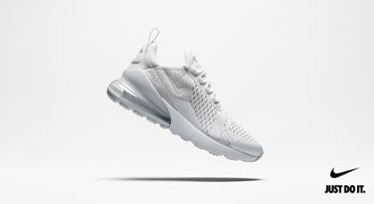
Pristine white Nike Air Max 270 floating against seamless white infinity backdrop, subtle drop shadow beneath. Shoe positioned at dynamic 30-degree angle showing side profile and sole technology details. Camera: Phase One XF + 80mm lens, medium format resolution Lighting: Wraparound white lighting, no harsh shadows, pure clean aesthetic Intent: Nike campaign minimalism, athletic luxury Text: Nike swoosh logo, bottom right. "JUST DO IT" in clean sans-serif Tokens: nike\_studio\_setup, editorial\_packshot, swoosh\_campaign\_2024, IMG\_9854.CR2
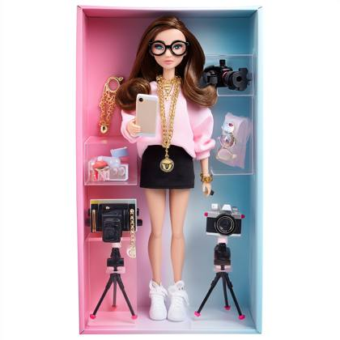
A realistic plastic boxed doll resembling a fashom model woman, lifelike facial features, soft natural makeup, wearing black glasses, long wavy brown hair, pink shirt with gold jewelry, black mini skirt and white sneakers, standing in a pink and blue gradient box packaging, holding a phone and surrounded by mini tripod, camera and laptop accessories, face detailed like a real person, not stylized, smooth skin texture, expressive eyes, natural lighting
[Starbucks caramel coffee with cream and a straw, surrounded by a golden background of starry lights and falling coffee beans]. Commercial food photography image for an advertising campaign, high resolution, high level of details
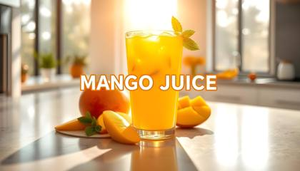
A vibrant photograph of a gleaming glass of Mango Juice, captured on a sleek, polished concrete countertop in a modern kitchen with floor-to-ceiling windows, evoking a sense of sunny morning freshness, with dew droplets glistening on the rim and a few ice cubes slowly melting, surrounded by sliced mangos and a few fresh mint leaves, bathed in soft, golden morning light streaming through the windows, exuding a sense of revitalization and rejuvenation, in a stunning fusion of citrusy hues of orange, yellow, and green. The bold, white text "MANGO JUICE" is emblazoned across the top in an extra-bold, sans-serif font, with an orange outline accentuating the letters, making the words pop with energy and vitality, inviting the viewer to take a refreshing sip.
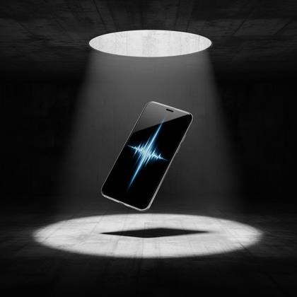
A next-gen smartphone hovering mid-air in a massive concrete brutalist cube space, spotlight from above casting crisp shadow beneath. Cold, industrial aesthetic. Shot on Canon EOS R5 + RF 24-70mm f/2.8L, ISO 100. Reflective screen shows a digital pulse ripple. — product\_exhibit\_#1984, commercial lighting, IMG\_9854.CR2, tech editorial launch, warner bros .com

[McDonald’s Big Mac with layers of fresh lettuce, melted cheese, and signature sesame seed bun, placed on a golden surface with the McDonald’s logo subtly glowing in the background. Falling sesame seeds and golden light, warm scene]. Commercial food photography for an advertising campaign, high resolution, high level of details
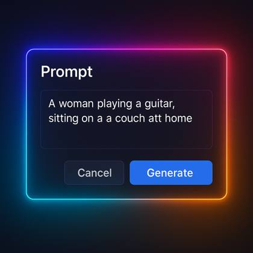
create an image of a modern, tech UI screen of a prompt dialogue box for prompt engineering with gradient LED, glowing lights on the edges of blue, purple, pink and orange
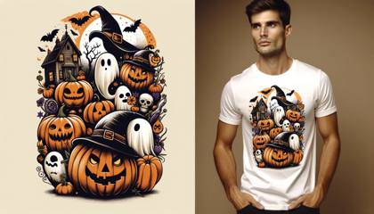
Can you generate some [Halloween] themed t-shirt designs? The left side should contain just the design, the right side should feature a model wearing the same design. Use a wide aspect ratio.

A menacing 2024 Lexus RX 500h in Obsidian Black metallic finish positioned at a commanding three-quarter front angle on a polished concrete platform in an architectural void. The hybrid luxury SUV features murdered-out aesthetic with blacked-out chrome trim, matte black spindle grille, and custom gloss black 21-inch F SPORT wheels with low-profile Michelin Pilot Sport tires. Dark-tinted LED headlights create piercing white signature strips cutting through the darkness. All badges and trim pieces rendered in shadow chrome black. Environment: Industrial minimalist space with charcoal concrete floors extending into infinite darkness. Subtle architectural grid lines etched into the floor surface. Single geometric light beam cuts diagonally through the space above the vehicle. Camera Simulation: RED Komodo 6K with Zeiss Otus 55mm f/1.4 at f/8, positioned at automotive photography height 4 feet, slight low angle to emphasize aggressive stance and presence. Lighting: Dramatic single-source key light from 60-degree front-right creates sharp definition across the hood and front fascia while maintaining deep shadows. Subtle blue accent lighting from below illuminates the hybrid badge. Controlled reflections in the gloss black paint reveal studio lighting setup and concrete textures. Commercial Intent: Dark luxury automotive reveal with stealth performance positioning. Architectural minimalism emphasizing hybrid power and sophisticated menace. Text Overlay: "LEXUS" in refined sans-serif, bottom left in white. "RX 500h BLACK LINE" in smaller weight below. Tagline "DARKNESS REFINED" in minimal typography, upper right corner. Atmospheric Elements: Thin light rays cutting through darkness, minimal concrete dust particles in light beam, perfectly controlled reflections showing industrial textures in the paint surface. Hidden Tokens: IMG\_9854.CR2, lexus\_black\_edition\_2024, editorial\_packshot, commercial\_lighting, automotive\_stealth\_campaign, product\_exhibit\_#1984, luxury\_suv\_studio
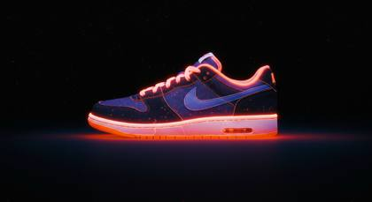
Kirlian Effect, an Electromagnetic field around a Nike shoe, captured by a Fujifilm GFX 50R, vibrant illustrations, 32k uhd, subtle gradients, fairy tale illustrations, bokeh, dreamy glow, ethereal lighting
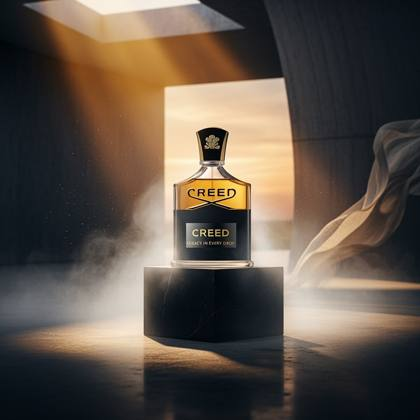
A luxurious Creed cologne bottle crafted from translucent smoked crystal with beveled edges and a weighted gold-plated cap engraved with the brand crest, sitting centered on a sleek obsidian pedestal. The product is wrapped in soft diffused vapor, accentuating its premium silhouette. Background features a minimalist architectural setting — curved concrete walls with a warm gradient sunset piercing through an upper skylight, casting golden streaks on the floor. Simulated with Canon EOS R5 + RF 85mm f/1.2L lens for ultra-shallow depth of field, f/1.8, ISO 100. Lighting setup uses dramatic backlight with subtle golden side rim and a polished stone floor that captures clean mirror reflections beneath the bottle. The scene is stylized for a luxury fragrance campaign — elegant, timeless, masculine. Text overlay: CREED in serif gold foil typography, tagline below: “Legacy in Every Drop.” Atmosphere includes light fog, micro-particles suspended in air, and thin linen fabric barely visible in the backdrop, caught mid-sway. — IMG\_9854.CR2, editorial packshot, amazon studio backdrop, commercial lighting, product\_exhibit\_#1984, warner bros .com, product layout flatlay
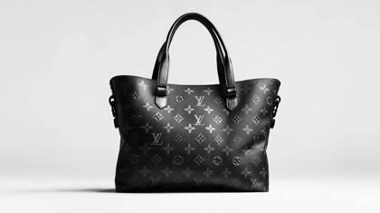
Louis Vuitton Neverfull MM bag with black monogram canvas, black leather trim and handles, black hardware, and a spacious interior, on a white background
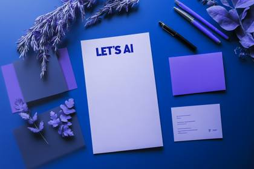
Letterhead mockup, blue and purple color scheme with the brand "LET'S AI", surrounded by business cards, letterhead paper, pens, a business card, in a modern, clean, professional, cutting-edge look, high-resolution photography
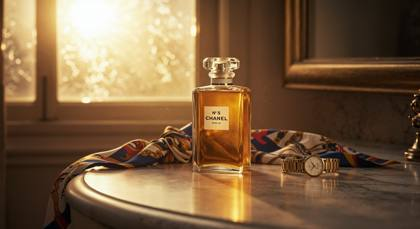
A Chanel No. 5 bottle placed elegantly on a marble vanity next to a silk scarf and gold watch, warm sunrise pouring through frosted glass behind it. Captured using Leica M10 + Summilux 75mm f/1.4, intense DOF focus on bottle, light blooms and shadows cascading on soft fabric textures. Editorial realism enhanced with outtake from Vogue beauty campaign, 16:9 cinematic crop, color grade inspired by Annie Leibovitz studio palette, full photorealistic studio-quality composition.
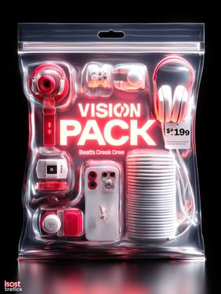
A transparent zip-sealed plastic bag with a die-cut hanging hole, containing miniature sculptural objects themed around Beats by Dre headphones, such as a pair of red headphones a glowing beats by dre logo, a coiled white cable, a tiny iPod, and a tiny iPhone 16 PRO MAX, arranged neatly inside, shot in premium product photography style. The label reads "VISION PACK: Beats by Dre" in bold text, and a price tag sticker says "$199" in a torn style, placed at the corner. The background is solid black, with soft studio lighting and subtle rim lights for a sleek, cinematic look. Toy packaging meets conceptual art mockup aesthetic
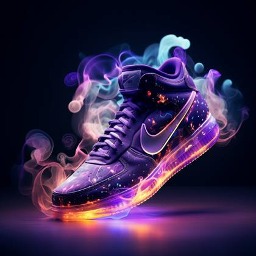
Kirlian Effect, an Electromagnetic field around a Nike shoe, captured by a Fujifilm GFX 50R, vibrant illustrations, 32k uhd, subtle gradients, fairy tale illustrations, bokeh, dreamy glow, ethereal lighting
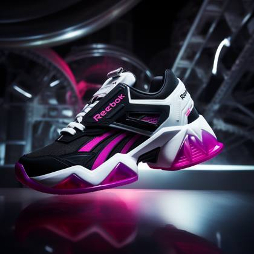
a Reebok shoe, futuristic look, product photography shot with a Canon EF 50mm f/1.8 STM Lens, cinematic lighting, elaborate details, 8k resolution, Magenta, Black, White colors --style 4WQUJnhw --v 5.2
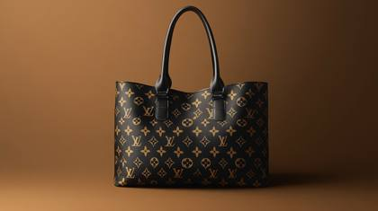
Louis Vuitton Neverfull MM bag with black monogram canvas, black leather trim and handles, black hardware, and a spacious interior, on a brown background
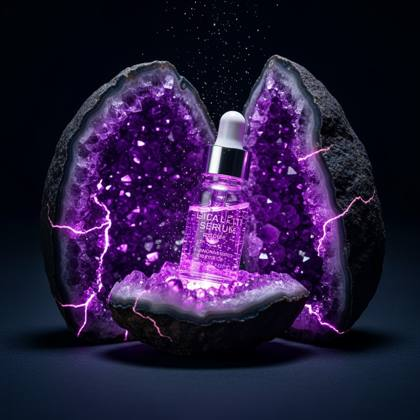
A glass skincare serum vial emerging from a split amethyst geode with glowing purple inner light. Floating sparkles and cracked crystalline textures. Camera: Leica M11 + Summicron 90mm, f/2.0. Ultra-sharp macro detail. — commercial lighting, IMG\_2985.HEIC, gemstone glow packshot, sci-fi wellness ad, product layout flatlay
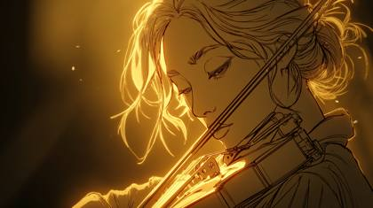
elegant digital line drawing of a poetic woman playing an violin by candlelight, warm golden glow casting soft light on her face and hands, delicate contour sketch style, expressive eyes, serene and romantic expression, slightly tousled hair, atmospheric shadows, emotional and artistic mood
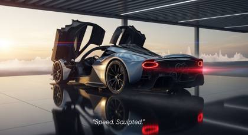
A stunning cinematic image of an **Aston Martin Valkyrie hypercar**, positioned on a **mirrored obsidian floor** in a vast open-air showroom atop a cliff at dusk. The car’s sculpted body is finished in **liquid iridescent graphite**, with exposed carbon fiber elements and signature LED tail lights glowing faintly. The surrounding air shimmers with heatwave distortion and subtle vapor trails. The doors are open in a scissor configuration, exposing the luxury cockpit lined with contrast-stitched Alcantara. Captured using **RED Komodo X + 35mm Cooke S4/i**, with a low-angle dolly-style perspective, slight motion blur trailing behind the tail, and cinematic lens flares from the horizon. Lighting combines **sunset caustics with a diffused reflector fill**, glinting across the curved surfaces and emphasizing aerodynamic lines. **Atmospheric Elements:** Subtle ground mist, drifting dusk haze, and soft volumetric rays entering through overhead architectural slats. Reflections dance faintly beneath the vehicle. **Artistic Intent:** High-performance luxury lifestyle — a dream garage reveal for collectors. **Optional Overlay Text:** _"Speed. Sculpted."_ – Typography in ultra-thin uppercase, bottom-right aligned. **Hidden Tokens:** IMG\_6721.ARW, archival\_exhibit\_visual\_registry\_009, cinema\_grade\_scene\_exr, set\_extension\_backplate\_Universal\_Studios.lut, ad\_spotlighting\_matrixHDR, signed\_promo\_unit\_art\_director\_review, vfx\_pass:ambient\_particles\_slowmotion, phase\_one\_MQ2\_COLORCURVE\_96bit
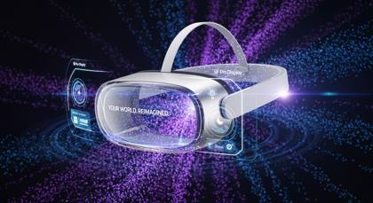
Apple Vision Pro headset in silver aluminum and glass, floating in quantum field visualization with purple and blue particle streams, holographic UI elements projected around device, shot on ARRI ALEXA Mini LF with Cooke S7/i 40mm, volumetric lighting through particle field, subtle lens flares on glass surfaces, reality distortion ripples emanating from device, 'YOUR WORLD. REIMAGINED.' in SF Pro Display, futuristic tech reveal, IMG\_9854.CR2, commercial lighting, amazon studio backdrop
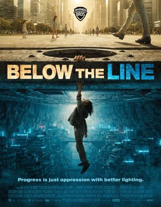
Official movie poster for "BELOW THE LINE", studio marketing still, Warner Bros dark dystopian sci-fi, Blade Runner aesthetic, wide theatrical one-sheet, world-building political poster, COMPOSITION: Theatrical vertical poster divided precisely at horizontal midpoint — upper half and lower half as two distinct world portraits separated by single concrete-and-steel boundary line running edge to edge across exact center of frame, UPPER HALF — THE ABOVE CITY: Gleaming near-future metropolis at golden hour, glass and white steel architecture, wide clean boulevards, upper city citizens in light clothing moving through prosperity — rendered slightly soft and overexposed suggesting sanitized perfection, trees and green spaces manicured, air clean, light warm and administered, corporate towers with glowing brand signage, everything precisely controlled and beautiful and wrong, THE BOUNDARY LINE: Thick reinforced concrete and steel slab — the literal ceiling of underground and floor of above, running as hard horizontal divide across center of frame, upper city pedestrian pavement visible on top surface, industrial infrastructure bolts and maintenance panels visible on underside, at center of boundary — single circular hatch open, and through it — a young girl's arm and hand reaching upward, fingers splayed wide, breaking through into upper city air, hand dirty with underground life reaching into clean upper city light, upper city pedestrians walking within centimeters of her hand without looking down, one woman's expensive shoe inches from the girl's outstretched fingers, LOWER HALF — THE UNDERGROUND CITY: Dense compressed urban survival environment carved into rock and reinforced concrete cavern, cold blue bioluminescent and neon lighting, thousands of stacked dwellings in tiered rock faces, bridges and cables strung between structures, industrial haze and fog at lowest levels, population density extreme — lives lived in engineered darkness, below the girl's dangling legs the underground city drops away for hundreds of meters, she is hanging by her arms through the hatch, LIGHTING: Perfect lighting opposition — warm administered golden light in upper half, cold survival blue in lower half, boundary line in deep industrial shadow, girl's hand in upper city catching warm gold light for the first time, her arm transitioning through the boundary from cold blue below to warm gold above, volumetric haze in underground catching cold light sources, COLOR GRADE: Blade Runner dystopian palette — upper city in warm overexposed gold-white, boundary in cold charcoal, underground in deep blue-teal-black, high contrast between worlds, girl's skin transitioning between color temperatures at boundary as single human element connecting both, ACEScg, HDR10+, neon color contamination in underground sections, ATMOSPHERE: The political argument made visually — prosperity built on top of compressed humanity, the boundary is a choice not a necessity, the girl's hand reaching into upper city air the single act of disruption in a perfectly maintained system of separation, TYPOGRAPHY INSTRUCTIONS: Title "BELOW THE LINE" — placed precisely ON the boundary line itself, text straddling both worlds — upper portion of letters in warm gold against upper city, lower portion in cold blue against underground, the LINE word itself rendered as the literal boundary — thick, architectural, load-bearing typography, tagline "Progress is just oppression with better lighting." — cold blue sans-serif, underground side, just below boundary line, Warner Bros shield top center, billing block bottom standard, world-building text elements: coordinates, district markers, official signage visible on boundary infrastructure, TECHNICAL: Shot on ARRI ALEXA LF, Panavision Ultra Panavision 70 anamorphic 28mm, f/5.6, deep focus holding both worlds sharp simultaneously, upper city slightly overexposed — deliberate, the aesthetic of administered perfection, underground correctly exposed in blue-cold tones, anamorphic horizontal flares on underground neon sources, film grain heavier in underground half, cleaner in upper city half — even the grain is class-stratified, 2.39:1 anamorphic aspect, Dolby Vision HDR, META TOKENS: official movie poster, studio marketing still, shot on ARRI ALEXA LF, anamorphic lens, cinematic depth of field, film grain, chromatic aberration, ACEScg, HDR10+, Dolby Vision, volumetric lighting, practical lights, hyperrealistic, no AI artifacts, photographic realism, professional color grade, dystopian sci-fi, Blade Runner aesthetic, political thriller
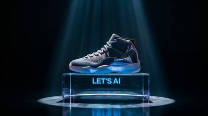
A Jordan 11 sneaker with metallic silver accents displayed on a floating transparent platform in a dark studio, illuminated by controlled laser beams, Fujifilm GFX100 II + GF 63mm f/2.8 R WR, warner bros stills archive, focused beam lighting with rim glow and sharp shadows, futuristic product advertising look. The word Let's AI in gradient text

Scan of a Shonen Jump manga page, the panels shows scenes of a fortnite character, purple color element, Black and white vintage Japanese comic --ar 16:9
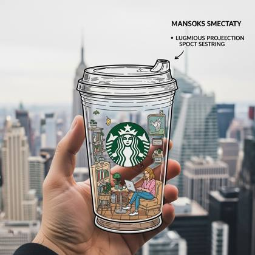
A mixed reality pov shot of a hand holding a hand drawn whimsical thick line illustration of a Transparent Take away Starbucks cup with a miniature scene inside, woman on a laptop in a cozy starbucks, luminous projection spot metering, and the background is a soft focus hyperrealistic NYC skyscrapers. The Cup in 2D illustration and the background is hyperrealistic, Include a text in the top right corner

Interior design of a bedroom, in red, yellow and gold color, mcdonald brand style --ar 16:9
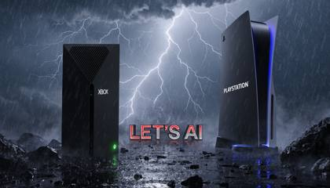
A dramatic cinematic scene featuring two rival products placed side by side in a custom-designed environment that visually reflects their identities. The composition should include high contrast lighting, atmospheric effects like mist, fog, or neon glow, and hyper-detailed textures. Incorporate a powerful 3D slogan "LET'S AI" below or behind the products in bold stylized typography that fits the scene’s mood. The products must reflect the essence of XBOX and Playstation through color, lighting, and placement. Ultra-realistic, moody tones, with sharp depth of field and high resolution
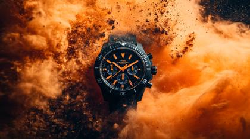
Commercial photography, powerful explosion of orange dust, waterproof watch, white lighting, studio light, high resolution photography, insanely detailed, fine details, isolated plain, stock photo, professional color grading, award-winning photography

photorealistic photo of a louis vuitton store, with a modern display of the latest purses, magazine product adverstisement style image for Vogue Magazine, a collection of louis vuitton purses perfectly displayed in a professional arrangement as a product photo advertisement
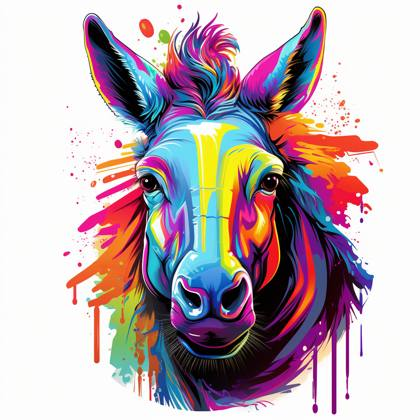
vector t-shirt art ready for print colorful graffiti illustration of a horse, frontal perspective, action shot, vibrant color, high detail
A dramatic cinematic scene featuring two rival products placed side by side in a custom-designed environment that visually reflects their identities. The composition should include high contrast lighting, atmospheric effects like mist, fog, or neon glow, and hyper-detailed textures. Incorporate a powerful 3D slogan "LET'S AI" below or behind the products in bold stylized typography that fits the scene’s mood. The products must reflect the essence of XBOX and Playstation through color, lighting, and placement. Ultra-realistic, moody tones, 1:1 square format, with sharp depth of field and high resolution
Create a captivating YouTube thumbnail featuring a mystical, wizard-like character in a dynamic, powerful pose, set against an ethereal, magical background with swirling energy and vibrant colors. Ensure the overall design is visually striking, with a mix of fantasy and modern tech themes, and use a harmonious color palette with purples, blues, and vibrant accents, with the words "PROMPT WIZARD"
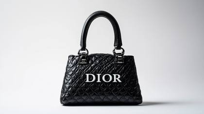
Product photography for an ecommerce website of a black Dior purse facing forward, crisp white background, with the text "DIOR" written in white font, with studio lighting creating a minimalist and hyper realistic, cinematic shot in the style of high resolution photography.
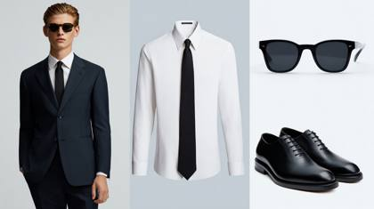
a collage of Armani products: solid navy suit, sleek black leather shoes, white long sleeve collared shirt, black sunglasses, black tie. Products onlyl, no person
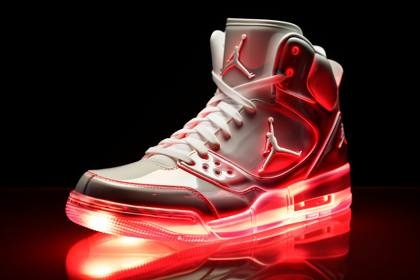
**_Glowing [Your object] next to a white surface, in the style of hyper-realistic details, [Color1] and [Color2], chromatic aberration, modular, clear edge definition, glowing colors, matte background, , translucent molten_**
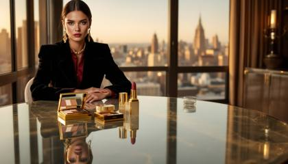
Create an ultra-high-resolution hybrid editorial/commercial image for Tom Ford Fall 2024. Primary subject: Model wearing Tom Ford's black velvet blazer with gold hardware $4,900, layered over a burgundy silk blouse $1,890, and tobacco-colored leather pants $3,500. Makeup focus: Tom Ford's Bitter Peach lip color and Eye Color Quad in 'Golden Mink' visible on model's face, with product placement naturally integrated in foreground using glass surfaces. Setting: Modernist penthouse at golden hour, incorporating reflective surfaces to create multiple angles of the beauty products. Styling details: Include Tom Ford's new geometric gold chain necklace and black croc-embossed clutch. Camera angle: Shot at eye level with a subtle dutch angle, using f/2.8 aperture for selective focus. Lighting: Main key light at 45 degrees with subtle rim lighting to enhance product textures. Typography: Include product prices and 'TOM FORD FALL 2024' in brand's Versailles font, aligned bottom right.
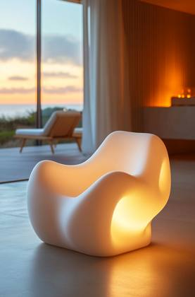
A soft white foam sculpture of an armchair in the foreground, a gradient background with warm orange and yellow lighting from behind, a window on one side showing a blue sky outside, a modern minimalist room with sleek furniture in the distance. The chair is soft and rounded with organic shapes, and it is placed at eye level.
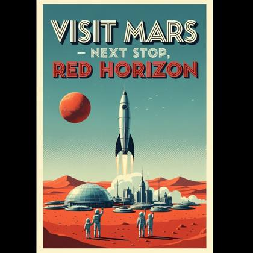
A retro-futuristic travel poster for Mars, rendered in ultra-HD digital print style. Bold typography at the top reads: “VISIT MARS – NEXT STOP, RED HORIZON” in a stylized, retro sci-fi font. A silver rocket ship launches from a domed colony city in the red desert below, with astronaut families waving. 1950s-style art deco influence, accurate shadows, subtle halftone texture, crisp poster layout. Keywords: retro-futurism, accurate text, poster design, mid-century sci-fi, halftone, Mars travel.
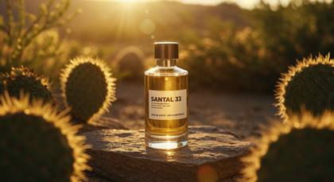
A Le Labo Santal 33 bottle sitting on textured stone, surrounded by desert plants and golden sunlight at low angle, wind causing faint movement in background. Shot using Canon EOS R5 + RF 85mm f/1.2, soft shallow DOF on product with blurred bokeh of cactus and sand. Directional side-light from the setting sun gives a natural amber tone. Includes Kodak Portra 400 simulation and EXIF-style realism: ISO 100, f/1.2, 1/2000s, subtle lens flare on glass edges.
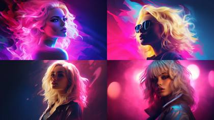
blonde woman portrait, Synthwave --ar 16:9
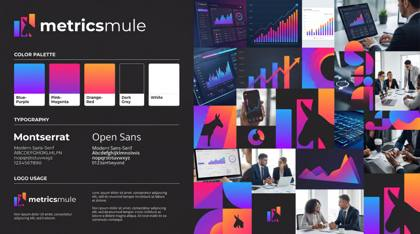
Create an entire brand guideline and a collage type moodboard for this, my brand is “YOUR BRAND”

A glass of (dark liquid | refreshing juice | mojito) with ice cubes, a slice of orange, and smoke rising from it, against a dark background
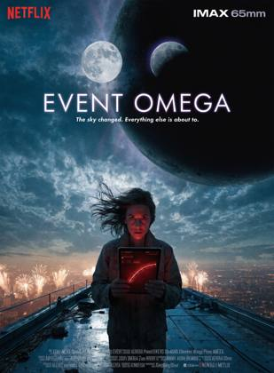
Official movie poster for "EVENT OMEGA", studio marketing still, Netflix original film, Netflix thumbnail optimized composition — single dominant figure against massive sky backdrop, COMPOSITION: Extreme low-angle wide shot, lone woman scientist standing at edge of rooftop observatory platform, silhouetted from below, two moons visible in night sky behind her — one familiar pale white moon, one slightly larger with faint violet-green atmospheric haze, subtly wrong geometry, city skyline far below with celebration fireworks and warm golden light, she faces camera holding data tablet glowing red with warning data, face partially lit red from screen, expression of cold dread while world below celebrates, LIGHTING: Dual moon lighting — cool blue-white from real moon left side, unsettling violet cast from second moon right side, creating split-tone lighting on her face, practical red light from data tablet warming her features, volumetric atmospheric haze around second moon, God rays through thin cloud layer, city glow as warm rim light from below, deep velvet black sky with no stars near second moon — it is absorbing them, COLOR GRADE: Netflix high contrast palette — deep blacks, cold blue midtones, isolated red warning glow on subject face, violet-green haze localized to second moon zone, warm amber celebration glow in distant city far below, ACEScg color science, HDR10+, Dolby Vision, SUBJECT: Late 30s female astrophysicist, worn field jacket, hair wind-caught, intense eyes locked on camera with controlled fear, data tablet in both hands showing red trajectory warnings, no smile, isolated in frame — the only person not celebrating, ATMOSPHERE: Thin clouds catching violet light, light atmospheric distortion near second moon edge, subtle lens flare from moon interaction, feeling of vast cosmic wrongness hidden in beautiful spectacle, TYPOGRAPHY INSTRUCTIONS: Title "EVENT OMEGA" — bold sans-serif, all caps, tracked wide, clean white with subtle violet glow edge, placed upper third center, Netflix-readable at thumbnail scale; Tagline "The sky changed. Everything else is about to." — light weight italic, centered below title, cool grey-white; Standard billing block bottom — white on dark, industry spec; Netflix logo top left corner; TECHNICAL: Shot on ARRI ALEXA 65, Zeiss Supreme Prime anamorphic 40mm, f/2.8, cinematic depth of field with sharp subject and softly rendered moons, anamorphic lens oval bokeh on city lights below, subtle film grain 35 ISO equivalent, slight chromatic aberration at moon edges, IMAX 65mm aspect print quality, photochemical finish, META TOKENS: official movie poster, studio marketing still, shot on ARRI ALEXA 65, IMAX 65mm, anamorphic lens, cinematic depth of field, film grain, chromatic aberration, ACEScg, HDR10+, Dolby Vision, volumetric lighting, practical lights, hyperrealistic, no AI artifacts, photographic realism, professional color grade
[Starbucks caramel coffee with cream and a straw, surrounded by a golden background of starry lights and falling coffee beans]. Commercial food photography image for an advertising campaign, high resolution, high level of details
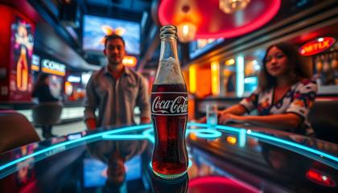
A bottle of Coke with ice-cold condensation, placed on table in a modern city bar, high resolution, ultra realistic, high quality details, wide angle lens, in the style of professional award-winning advertising photography, with the words "COKE" on the label
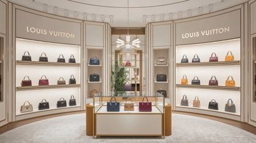
photorealistic photo of a louis vuitton store, with a modern display of the latest purses, magazine product adverstisement style image for Vogue Magazine, a collection of louis vuitton purses perfectly displayed in a professional arrangement as a product photo advertisement

Product photography of a black cologne bottle lying on a liquid surface, with the text "DIOR" written in white font against a dark gray background, with studio lighting creating a minimalist and hyper realistic, cinematic shot in the style of high resolution photography.
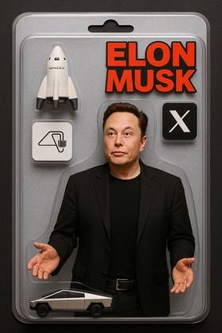
image of Elon Musk trapped in toy packaging, package includes a cybertruck, a spacex craft, a neurolink chip and the icon for X, formerly known as twitter
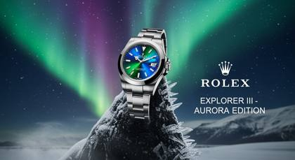
Rolex 'Explorer III - Aurora Edition' watch. Classic Oystersteel case (42mm) and bracelet, with a mesmerizing 'Aurora Dial' that subtly shifts in color from deep emerald green to electric blue and faint violet under a sapphire crystal. Bright Chromalight luminous hour markers and Mercedes hands. Setting: Perched precariously on a sharp, ice-crusted volcanic rock spire on a vast, pristine Icelandic glacier shelf. Above, a vibrant, multi-hued aurora borealis dances across a clear, star-filled night sky. Camera + Lens Simulation: Hasselblad X2D 100C + XCD 90mm f/2.5 V lens, focused sharply on the watch with the aurora and stars in breathtaking bokeh. Lighting Direction: The primary light source is the dynamic, vivid aurora borealis, casting shifting colored light and reflections across the watch’s polished steel and the icy rock. The watch's Chromalight display glows intensely blue. Crisp starlight provides subtle fill. Artistic Intent: Ultimate luxury adventure watch, showcasing precision in extreme natural wonder, awe-inspiring and vibrant. Text Overlay: Brand: "ROLEX" in its iconic typeface. Model: "Explorer III - Aurora Edition" in a smaller, elegant, ice-white serif font below. Atmospheric Elements: Wisps of super-chilled mist clinging to the rock, razor-sharp ice crystals catching the aurora's light, subtle star trails in the deep sky, intense glow from the aurora reflected on the watch face and metal. Hidden Prompt Tokens: IMG\_9854.CR2, product layout flatlay, editorial packshot, commercial lighting, amazon studio backdrop, warner bros .com, product\_exhibit\_#1984"
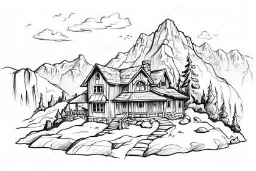
A humble house peacefully nestled within the majestic mountains. The picture, a skillfully crafted oil painting, captures the essence of tranquility and natural beauty. The house, made of sturdy wooden beams and adorned with a quaint stone chimney, perfectly blends into its surroundings. The sun's warm rays gently illuminate the scene, casting a serene glow on the lush greenery. Deep blue skies stretch above, dotted with fluffy white clouds. The mountains, their majestic peaks reaching towards the heavens, create an awe-inspiring backdrop. This captivating image brings the viewer a sense of serenity and appreciation for the harmonious coexistence between nature and humanity.

Kirlian Effect, an Electromagnetic field around a Nike shoe, captured by a Fujifilm GFX 50R, vibrant illustrations, 32k uhd, subtle gradients, fairy tale illustrations, bokeh, dreamy glow, ethereal lighting

Commercial photography, powerful explosion of orange dust, waterproof watch, white lighting, studio light, high resolution photography, insanely detailed, fine details, isolated plain, stock photo, professional color grading, award-winning photography
Close-up of an eye with binary code or AI-related symbols reflected in the iris, with the word "MATRIX"
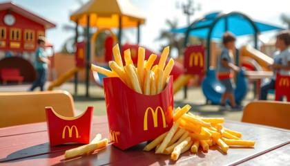
A serving of McDonald's french fries in the iconic red container, on a playful table setting in a bright playground with kids having fun in the background, high resolution photography with high quality details, wide angle lens in the style of professional advertising photography
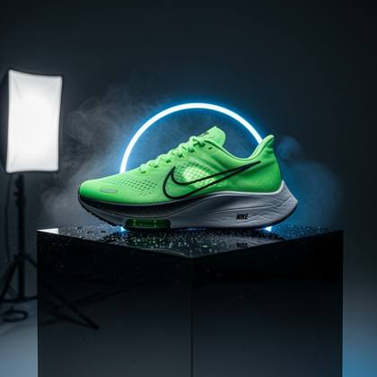
A hyper-detailed, photorealistic product photograph of a neon green Nike running shoe displayed on a reflective black acrylic pedestal in a dark, minimalist studio environment. Shot with a Canon EOS R5 + RF 85mm f/1.2L lens at f/2.8 to create a sharp focus on the shoe with dreamy bokeh in the background. The scene is lit with a dramatic 3-point lighting setup: a soft diffused key light from camera left, a rim light with cool blue gel behind the shoe to accentuate its shape, and a low-angle kicker for subtle underglow. The neon material of the shoe emits a soft internal glow, contrasting against the matte and carbon fiber textures of the sole. A mist of micro water droplets is lightly scattered on the pedestal to catch the light, adding realism. No background distractions, full contrast and sharp reflections. The Nike logo on the side is clearly visible and subtly backlit for emphasis. Intended as a luxury performance footwear ad.
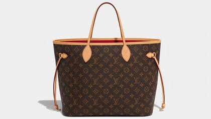
Louis Vuitton Neverfull MM bag with brown monogram canvas, brown leather trim and handles, gold hardware, and a spacious red interior, on a white background
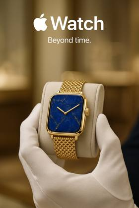
Create image, ultra-realistic high-end jewelry ad for Apple Watch reimagined as a luxury jeweler. Feature one unique jewelry piece in any form using materials like metal, stone, fibers, or wood, aligned to brand aesthetic. Product displayed by cropped white gloved clerk in a blurred boutique background styled with brand colors. Emphasize product with contrast and shallow depth of field. Brand logo on top with small slogan below, choose the one suit the scene. Shot in professional editorial style with Canon EOS R5 + RF 100mm f/2.8L Macro at f/4, ISO 100, 1/160 sec, soft diffused key light and gentle fill. Clean, surreal yet believable scene, clever minimal concept

Eye-level commercial film photograph, presenting a perfume bottle against the backdrop of New York city lights on a rain-kissed day, packshot, focus, depth of field, shot on 120mm, shot on Hasselblad, sharp focus
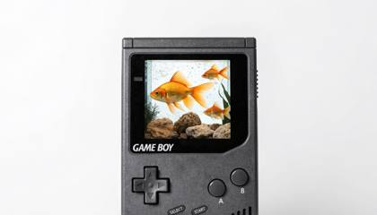
A Game Boy with an aquarium inside the screen, golden fish swimming in it, hyper-realistic, product photography, soft lighting, neutral background, studio shot, front view.

A treasure chest overflowing with glowing purple and blue gradient prompt icons and AI symbols
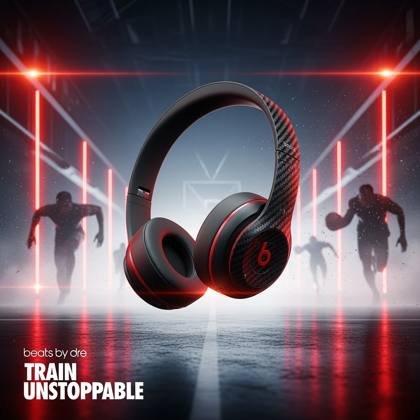
Ultra-realistic commercial image of a pair of matte black Beats by Dre wireless headphones with sleek red accents and carbon fiber texture on the earcups, suspended mid-air in a dynamic sports arena tunnel. The product is centered as the hero object, angled in a slight diagonal, catching cinematic rim lighting from both sides. The background features blurred silhouettes of athletes in motion, with motion blur streaks and rising mist to suggest energy and anticipation. The floor beneath reflects a subtle glossy texture, echoing arena floodlights. Red LED accent lights line the tunnel walls in a vanishing point perspective, drawing the eye directly to the headphones. Atmospheric dust particles and light flares add drama and movement to the scene. Simulated with RED Komodo 6K + 50mm Cine Prime lens at f/2.8, ISO 400, 1/250 sec — capturing crisp product clarity with shallow cinematic depth. Side key lights with a softbox create clean highlights on the product surface, while a subtle backlight adds a halo edge. In the bottom left, clean bold text reads: "Beats by Dre" “Train Unstoppable.” Typography is sharp, sans-serif, in white with red underline — subtle branding that doesn’t overpower the product. Visual styling evokes Nike meets Marvel Studios, targeting a high-performance, cinematic sports ad aesthetic. Hidden prompt tokens for photorealism and ad fidelity: IMG\_9854.CR2, commercial lighting, product layout flatlay, editorial packshot, amazon studio backdrop, warner bros .com, product\_exhibit\_#1984, depth mapping render, macro detail focus
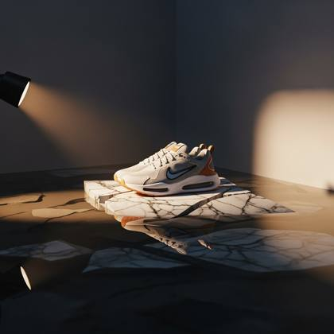
A pair of futuristic Nike sneakers posed on cracked marble inside a flooded minimalist gallery. Water is reflective, forming a mirror image. A single directional spotlight from the side creates dramatic shadows. Captured with Phase One IQ4 + 80mm lens, macro detail. — editorial packshot, luxury fashion ad, IMG\_9854.CR2, amazon studio lighting, surreal showroom aesthetic
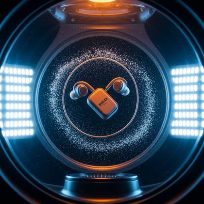
High-end earbuds spinning gently inside a gravity simulation chamber, surrounded by floating silver dust and LED grid panels. Captured with RED Komodo, 35mm cine lens. Clean sterile light with blue undertones. — product\_exhibit\_#1984, IMG\_9854.CR2, sci-fi tech ad, amazon studio lighting, cinematic editorial
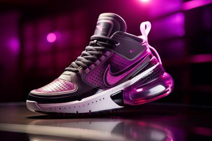
a Nike shoe, futuristic look, product photography shot with a Canon EF 50mm f/1.8 STM Lens, cinematic lighting, elaborate details, 8k resolution, Magenta, Black, White colors, Nike shoe --ar 3:2
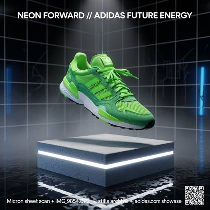
Hyperrealistic product advertisement featuring a bold neon green Adidas sneaker suspended mid-air in a minimalist, futuristic showroom. The shoe floats dynamically above a polished concrete pedestal with realistic ambient reflections, illuminated by sharp white-edge rim lighting and cool diffused underglow from below the pedestal. Behind it, a soft depth-of-field reveals glossy black tiles with subtle moisture streaks and hints of ambient blue light bouncing off nearby chrome surfaces. Fine details include visible mesh texture, suede panels, laces with slight motion blur, and glints of plastic eyelets. Studio fog subtly softens the backdrop for cinematic depth. The scene is captured with a Canon EOS R5 + RF 50mm f/1.2L lens, ISO 100, f/4.0, shot in vertical orientation for poster format. Lighting is controlled with key spotlight from above, side kickers for edge highlights, and a faint strobe fill for realistic product pop. The Adidas logo glows subtly on the shoe tongue and sole. At the top of the frame is sharp, clean ad text: “NEON FORWARD // ADIDAS FUTURE ENERGY” in Eurostile Bold. Bottom corner includes a micro QR code label and faint watermark: contact sheet scan + IMG\_9854.CR2 + stills archive + adidas.com showcase. Artistic intent: premium product spotlight campaign for print and digital launch, optimized for cinematic realism

[Coca-Cola bottle with condensation dripping down the sides, surrounded by ice cubes and a burst of vibrant red and white light rays. The Coca-Cola logo is prominently displayed on the bottle, with splashes of water frozen in mid-air]. Commercial food photography for an advertising campaign, high resolution, high level of details
A pair of pristine white Apple AirPods Pro (3rd Gen), suspended mid-water in a crystal-clear deep ocean environment, surrounded by soft beams of refracted sunlight cutting through from the surface above. The earbuds are partially encased in rising micro air bubbles and shimmering tendrils of deep-sea plankton, giving them an ethereal glow. Their sleek, polished ceramic-like surface reflects subtle hints of aqua and silver, enhanced by caustic lighting dancing across the product. The scene is captured in ultra-high fidelity using RED Komodo 6K + Nauticam housing, 35mm cinema lens, f/2.0, 1/250 sec, ISO 320, white balance adjusted for deep blue hues. The background fades into dark abyssal blue, with light particulate matter floating for texture. A soft ambient spotlight from above mimics cinematic sun rays, while a second faint side-light from a diver’s lamp adds dramatic edge lighting to the form. Artistic intent: futuristic tech reveal meets environmental luxury ad, evoking durability, waterproof engineering, and sleek minimalism. Text overlay: Apple AirPods Pro — in thin white Helvetica Neue, tagline below in bold: “Immersive Sound, Reinvented.” Atmospheric elements: refracted light rays, bubble trails, floating particles, slow-motion tension. — IMG\_9854.CR2, product\_exhibit\_#1984, warner bros .com, commercial lighting, product flatlay underwater, cinematic hero packshot, editorial ad series, amazon studio backdrop

Diamond-cut glass perfume bottle hovers then drops onto polished black marble | macro studio set, black infinity backdrop, silk smoke weaving behind | high-speed Phantom-style dolly push-in 1000 fps, snap zoom to catch impact micro-spray | single snoot spotlight overhead + gold bounce cards, dramatic chiaroscuro grade | close-mic splash SFX, sub-bass hit, breathy female whisper “Éclipse” synced on frame 62 | cam: RED Komodo X, 100 mm Cooke S4/i Macro, ƒ/4 | tokens: IMG\_9854.CR2, ProductMode\_ON, LUT\_Perfume\_Cinema
photorealistic photo of a louis vuitton store, with a modern display of the latest purses, magazine product adverstisement style image for Vogue Magazine, a collection of louis vuitton purses perfectly displayed in a professional arrangement as a product photo advertisement
incredibly ultra realistic advertisement photo of a closeup image of the perfect cut of filet mignon steak, winner of the Michelin award, beautiful garnish of garlic cloves sits on top of the perfectly symetrical steak, sitting on a pure white plate
Hyper-realistic cinematic ad image of Beats by Dre wireless headphones, rugged matte black with gloss red detailing, placed atop a sweat-slicked weight bench in the center of a gritty, dimly lit underground-style training gym. The headphones rest at a slight angle, one earcup touching the steel bench surface, droplets of sweat and condensation collecting naturally around the ear padding, glistening under the harsh overhead lights. A background boxer is blurred mid-motion, throwing punches at a hanging bag — his movement adds motion blur and kicks up fine sweat mist into the warm ambient air. Beads of sweat float visibly in the atmosphere, lit by shafts of light cutting through the haze. Shot with Canon EOS R5 + RF 85mm f/1.2L lens at f/2, ISO 500, 1/1000 sec — emphasizing ultra-shallow depth of field, sharp product detail, and authentic gym realism. Moody tungsten key lights overhead provide harsh contrast and defined shadows, while a side-mounted kicker adds glossy specular highlights to the product's curves. Typography overlays near the bottom read: "Beats by Dre" “Sweat. Grind. Repeat.” Clean industrial font in white with subtle red glow, positioned on a shadowed steel plate. The entire scene exudes grit, energy, and performance, visually aligned with Nike Training Club or Under Armour’s campaign language — sporty, raw, and emotionally charged. Hidden realism tokens to amplify fidelity and ad-styling: IMG\_9854.CR2, editorial packshot, commercial lighting, macro detail focus, amazon studio backdrop, warner bros .com, sweat particle FX, product\_exhibit\_#1984, steam overlay, flatlay realism cues
A luxury product spotlight image of the **Apple Vision Pro headset**, floating in the center of a minimal, futuristic white showroom inspired by a NASA clean lab. The headset features a **seamless laminated glass visor** with soft ambient reflections, precision-milled **anodized aluminum edges**, and plush white mesh headband. Micro-texture fabric detail is visible at macro scale. It floats subtly above a glowing resin plinth with faint volumetric mist beneath it, casting a soft shadow and halo. Shot on **Leica SL2 + Summilux-M 50mm f/1.4 ASPH**, with a narrow depth of field to capture only the lens curvature and texture contour. Lighting is a **soft skylight from above**, with **side fill diffusion through sheer fabric**, revealing delicate design lines. The background fades into clean optical white with floating ambient particles and slowmotion shimmer trails. **Artistic Intent:** High-concept luxury tech reveal — calm, futuristic, minimalist product hero. **Optional Overlay Text:** _“See Beyond.”_ – Helvetica Neue Light in lower-left. **Hidden Tokens:** IMG\_6721.ARW, packaging\_render\_prototype\_v2.1, hyperglass\_texture\_shader, ad\_spotlighting\_matrixHDR, vfx\_pass:ambient\_particles\_slowmotion, cinema\_grade\_scene\_exr, signed\_promo\_unit\_art\_director\_review, phase\_one\_MQ2\_COLORCURVE\_96bit

A neon donkey, vector t-shirt design, pop culture mashup, hyper-detailed illustration, surrealistic elements, white background
Official movie poster for "ASH THRONE", studio marketing still, Netflix original epic fantasy series, Netflix thumbnail optimized — dominant emotional subject against massive scale backdrop, readable at small size, COMPOSITION: Wide low-angle shot, young woman slave standing at base of enormous chained dragon, shot from behind her at ground level looking up — she occupies lower center frame, dragon fills upper 70% of frame, dragon rendered in massive photorealistic scale — scarred obsidian-black scales, four massive iron collar chains anchoring neck to ground, iron spikes driven through folded wings pinning them to stone platform, empire battle banners draped across its back in deep crimson with gold sigil, dragon head angled downward looking directly at the girl — not at the guards, not at the crowd, only at her, dragon eyes rendered in extraordinary detail — ancient amber-gold irises with vertical slit pupils, deep intelligence and controlled fury held in check, girl's posture — still, unafraid, one hand slightly raised toward the beast, slave brand visible on her forearm, stone imperial plaza surroundings — columns, empire architecture, crowd of soldiers and nobles blurred in background paying no attention to this exchange, LIGHTING: Dragon breathing slow ember light — deep amber-orange glow from throat illuminating girl from above, casting warm crisis light on her upturned face and raised hand, cold grey overcast imperial daylight on surrounding plaza, steam rising from dragon nostrils catching amber glow, empire banners backlit by flat grey sky creating silhouette edges, chains gleaming cold iron in grey light contrasting with warm amber dragon glow, girl split-lit — warm amber from dragon above, cold grey from empire world around her, COLOR GRADE: Netflix high-contrast epic palette — deep charcoal stone architecture, crimson empire banners, amber-orange dragon ember glow as emotional warmth anchor, cold grey overcast sky suggesting oppression, girl's slave clothing in muted earth tones, ACEScg color science, HDR10+, Dolby Vision, SUBJECT: Young woman, early 20s, South Asian or Middle Eastern heritage, slave clothing worn and patched, hair loosely contained, posture radiating absolute calm in the presence of the beast — no fear, only recognition, slave brand on forearm clearly visible as she raises hand toward dragon, DRAGON: Photorealistic dragon — not stylized, not cartoonish, scaled like a living creature, obsidian black scales with deep iridescent blue-green undertones visible in ember light, scarring across face and neck from years of captivity, chains have worn grooves into scale around neck, wings show iron spike wounds — healed but permanent, eyes are the emotional anchor of the entire image — intelligent, waiting, choosing, ATMOSPHERE: The secret visible only to viewer — dragon and girl in private communion while empire world around them remains oblivious, tension of something enormous about to begin held in absolute stillness, chains beginning to show hairline stress fractures visible only upon close inspection, TYPOGRAPHY INSTRUCTIONS: Title "ASH THRONE" — heavy medieval-influenced serif, all caps, ash-grey with ember-orange inner glow as if the letters are cooling from heat, placed upper third, Netflix-readable at thumbnail scale; Tagline "Every empire ends. She's just the first to ask." — light italic, warm white, centered below title; Show title treatment — NETFLIX SERIES banner top right; Billing block bottom standard; TECHNICAL: Shot on ARRI ALEXA 65, Panavision Sphero 65 anamorphic 35mm, f/2.8, shallow depth of field — girl and dragon eyes sharp, crowd and architecture softening into environmental context, anamorphic oval bokeh on background torchlight sources, heavy practical smoke and steam interaction with amber light, film grain 400 ISO equivalent, slight chromatic aberration at chain edges, 2.39:1 anamorphic aspect ratio, photochemical finish, META TOKENS: official movie poster, studio marketing still, shot on ARRI ALEXA 65, IMAX 65mm, anamorphic lens, cinematic depth of field, film grain, chromatic aberration, ACEScg, HDR10+, Dolby Vision, volumetric lighting, practical lights, hyperrealistic, no AI artifacts, photographic realism, professional color grade, epic fantasy
A high-end makeup palette opened across a soft crimson satin pillow in a gold-detailed baroque salon. Late afternoon window light spills in. Dust motes dance in the light. Captured with Leica SL2 + Summilux 75mm, f/2. — product layout flatlay, IMG\_2985.HEIC, classical luxury ad, amazon studio backdrop, product\_exhibit\_#1984
Cinematic 3D action-packed advertisement of Beats by Dre red headphones, shown in a dynamic mid-motion scene that visually expresses its core energy — dramatic lighting, particles, slow-motion effects, and surreal studio photography. Design the scene to reflect the product’s personality (crunchy, energetic, fast, luxurious, etc.). Add the brand logo made from elements of the product if possible, and a creative slogan beneath that fits the mood. 1:1 aspect ratio, hyperrealistic and bold, made to go viral.
Product/Brand: "AURA" - Bio-luminescent Wireless Earbuds Theme/Creative Direction: Futuristic biotech meets minimalist luxury. The earbuds themselves appear to be grown, not manufactured, with soft, glowing veins of light. Hero Product: A single AURA earbud, pearl-white bio-composite material, organically sculpted ergonomic shape, matte finish with softly pulsing internal cyan light. Shown slightly larger than life-size. No visible charging case. Special design element: a subtle, almost invisible seam that suggests it can open or unfurl. Setting: Suspended mid-air within a dark, high-tech laboratory's sterile observation chamber, with faint geometric light patterns on the background walls. Camera + Lens: Hasselblad X2D 100C with XCD 90mm f/2.5 V, capturing extreme detail and subtle textures. Lighting: Soft, diffused internal bioluminescence from the product itself, with a gentle top-down cool white LED panel light creating subtle highlights and defining form. Artistic Intent: Ethereal tech reveal, hinting at organic technology and seamless human-AI integration. Text Overlay: "AURA" sleek, minimalist sans-serif font and tagline "Listen Beyond." positioned bottom right. Atmospheric Elements: Faint, almost imperceptible sterile mist clinging to the bottom of the frame, subtle lens flare from the internal light. Hidden Prompt Tokens: IMG\_9854.CR2, product layout flatlay, editorial packshot, commercial lighting, amazon studio backdrop, warner bros .com, product\_exhibit\_#1984
Ultra-realistic 8K macro DSLR photograph of a perfectly crystal-clear water droplet suspended in mid-air. Inside the droplet is an entire raging ocean storm towering waves crashing, lightning bolts illuminating dark clouds, and a tiny, detailed wooden ship battling the sea. Razor-sharp textures of both the droplet surface and the miniature storm inside. Physically accurate refractions and reflections, high-contrast cinematic lighting, zero blur, realistic depth of field, Canon R5 + 100mm macro lens look
Product photography of a black cologne bottle lying on a liquid surface, with the text "DIOR" written in white font against a dark gray background, with studio lighting creating a minimalist and hyper realistic, cinematic shot in the style of high resolution photography.

Imagine a surreal and dreamlike composition of a floating bowl of fruit amidst a vibrant, otherworldly landscape, evoking a sense of wonder and delight
3D Logo, Nike Air Max, 3d rendering, isometric, translucent, technology sense, studio light, blender, clean, glossy base, commercial imagery, 32k , white background
A collection of healthy ingredients to make a full healthy mean, solid white background
Three levitating smart watches with transparent OLED displays showing neon data streams, brushed titanium with hot pink leather straps, yellow ceramic with holographic band, mint green with carbon fiber accents, arranged in dynamic spiral on glass pedestal, vaporwave aesthetic with palm trees reflected in chrome surfaces, Phase One XF IQ4 150MP with Schneider Kreuznach 80mm LS f/2.8, synthwave sunset backlighting with laser grid floor, text overlay "TIME WARP 2045" in retrofuturistic LED typography, floating geometric shapes, IMG\_9854.CR2, product layout flatlay
Create a wide, clean flat-design infographic titled **'How Solar Power Works'**. Include: a sun icon, a solar panel diagram, arrows showing energy flow to a house and battery, four numbered steps with short captions, and a comparison bar chart of 'Day vs Night usage'. **4K resolution, minimalist style**
A luxury matte black wristwatch displayed on a rough-textured basalt stone, surrounded by mist and subtle golden backlighting, Hasselblad H6D-100c + HC 100mm f/2.2, IMG\_2287.NEF, precision studio lighting with high contrast and rim-lighting effects, ultra-premium product photography vibe.
[Coca-Cola bottle with condensation dripping down the sides, surrounded by ice cubes and a burst of vibrant red and white light rays. The Coca-Cola logo is prominently displayed on the bottle, with splashes of water frozen in mid-air]. Commercial food photography for an advertising campaign, high resolution, high level of details
A pair of futuristic black and neon LED light sneakers floats mid-air above a floating 3d box at blue hour, surrounded by slow-motion flying dust and neon motion blur trails. A bold tagline in Helvetica reads: “DO IT NOW” at the bottom corner. Hyperreal rendering of mesh, foam, and laces. Lighting emulates a Nike-level product reveal — cinematic, gritty, and dynamic. Keywords: slow motion, motion blur, product ad, dust physics, material realism, editorial typography.
A pair of futuristic white and chrome sneakers floats mid-air above a cracked urban basketball court at golden hour, surrounded by slow-motion flying dust and motion blur trails. A bold tagline in Helvetica reads: “MOVE FORWARD” at the bottom corner. Hyperreal rendering of mesh, foam, and laces. Lighting emulates a Nike-level product reveal — cinematic, gritty, and dynamic. Keywords: slow motion, motion blur, product ad, dust physics, material realism, editorial typography.
the word "REALISM" in a font similar to Google sans serif, in gradient colors of orange, pink, purple and blue, lightling illuminated in sublt glow, the glowing golden lock behind the text, on a black background
A commercial close-up of a **limited-edition matte black Pepsi can**, upright on a chilled black marble shelf with soft specular reflections and faint condensation vapor drifting along the base. The aluminum surface is micro-textured with subtle glints under light, and the embossed **Pepsi logo shimmers with iridescent highlights**. Droplets bead naturally on the curved surface, hinting at ice-cold freshness. Shot with a **Canon EOS R5 + RF 100mm f/2.8L IS Macro** lens, with ultra-realistic bokeh and cinematic product isolation. Lighting is a **specular side light with gold bounce fill**, creating bold contrast and high-gloss pop while illuminating the water beads and logo emboss. **Environment:** Brutalist display alcove with black concrete background and high-polish edge lighting. Ambient particles drift slowly. A backlight mist shimmer creates depth behind the can. **Artistic Intent:** Refreshment energy ad — bold, cinematic, premium lifestyle look. **Optional Overlay Text:** _"Chill Bold."_ – Pepsi 2025 branding in minimalist sans-serif center-aligned at bottom. **Hidden Tokens:** catalog\_shoot\_lookbook\_2023, IMG\_6721.ARW, cinema\_grade\_scene\_exr, ad\_spotlighting\_matrixHDR, set\_extension\_backplate\_Universal\_Studios.lut, vfx\_pass:ambient\_particles\_slowmotion, hyperglass\_texture\_shader, phase\_one\_MQ2\_COLORCURVE\_96bit
ultra-realistic high-end jewelry ad for Rolex reimagined as a luxury jeweler. Feature one unique Rolex watch piece in any form using materials like metal, stone, fibers, or wood, aligned to brand aesthetic. Product displayed by cropped white gloved clerk in a blurred boutique background styled with brand colors. Emphasize product with contrast and shallow depth of field. Brand logo on top with small slogan below, choose the one suit the scene. Shot in professional editorial style with Canon EOS R5 + RF 100mm f/2.8L Macro at f/4, ISO 100, 1/160 sec, soft diffused key light and gentle fill. Clean, surreal yet believable scene, clever minimal concept
A breathtaking close-up of a pair of 8k ultra realistic Air Jordan shoes. The shoes are meticulously crafted with impeccable attention to detail, showcasing every stitch, texture, and logo with astonishing clarity. The environment is a sleek, modern sneaker boutique, filled with soft lighting that elegantly highlights the shoes' intricate design. The style is a hyper-realistic digital rendering, using advanced rendering techniques to achieve lifelike materials and lighting effects.
[Product by Brand] in a surreal, minimalist paper-glass style advertisement. The product is centered, crafted from translucent frosted glass-paper, placed against a clean white or softly tinted background. Soft cinematic lighting creates gentle contrast and ambient shadows. A single brand color subtly interacts with the scene through glow, mist, liquid, or foam. Include a bold, elegant 4-word slogan near the product. The brand logo appears subtly etched, glowing, or printed in a refined manner. Vertical or square aspect ratio, ultra-detailed, poster-quality, visually soothing and conceptually refined.
A charming and whimsical fashion illustration of a delicate doll-like girl standing against a textured paper backdrop with a hand-drawn city skyline, including the Empire State Building and Tokyo Tower. The character has a soft and romantic expression, with closed eyes, lightly blushed cheeks, and peach-toned lips. Her hairstyle is a loose, messy bun with soft strands of light brown hair gently framing her face. She wears a textured pink wool coat with large buttons and wide cuffs, layered over a light brown blouse and a high-waisted dark green mini skirt. The coat’s texture is highly detailed, showing a tactile, tweed-like fabric. She holds a tiny handbag with a gold clasp in her right hand, matching her vintage and playful style. On her feet are delicate high-heeled sandals with thin straps. Around her are hand-drawn pink hearts and real elements such as pink and orange macarons, soft peach-colored flowers, and a paintbrush, blending illustration and real-world textures seamlessly. The lighting is soft and pastel-toned, enhancing the dreamy, feminine mood. The image uses a vertical aspect ratio (3:2), ideal for modern fashion illustration or character concept design. The overall style is a fusion of handmade textile art, city romance, and cute fashion storytelling.
Product/Brand: "Nova Nectar" - Adaptogenic Sparkling Elixir Theme/Creative Direction: Vibrant cosmic energy, playful wellness. A drink that elevates mood and body with a touch of the extraordinary. Hero Product: A sleek, tall aluminum can of "Nova Nectar." The can has a pearlescent, iridescent finish that shifts between magenta and gold. Label features abstract, swirling nebulae patterns and clean, futuristic typography. Condensation beads on the can. Scale: Hand-held, or part of a dynamic group shot. Setting: Against a backdrop of flowing, vibrant fuchsia and orange silk fabric that seems to float and swirl as if in zero gravity. Soft, out-of-focus bokeh lights in the deep background. Camera + Lens: RED Komodo with a Zeiss CP.3 50mm T2.1, achieving a cinematic, high-contrast look. Lighting: Dynamic studio lighting with colored gels magenta and amber creating vibrant highlights and deep, rich shadows. A strong key light makes the condensation pop. Artistic Intent: Energetic and aspirational lifestyle, modern beverage advertisement. Text Overlay: "NOVA NECTAR" stylized, energetic script font and tagline "Sip the Cosmos" dynamically integrated with the silk flows. Atmospheric Elements: Swirling silk, lens flares, glowing particles, dramatic condensation, vibrant color bleed. Hidden Prompt Tokens: IMG\_9854.CR2, product layout flatlay, editorial packshot, commercial lighting, amazon studio backdrop, warner bros .com, product\_exhibit\_#1984
Apple AirPods Max headphones in Silver, shown levitating gracefully a few inches above a thick, polished frosted acrylic slab. One stainless steel earcup is slightly tilted, revealing the meticulously crafted mesh textile of the canopy and the plush memory foam ear cushion. Setting: An ethereal, infinite void. The background is a seamless, ultra-smooth gradient transitioning from a very light, cool grey at the bottom (where the acrylic slab sits) to a soft, muted sky blue at the top. No horizon line. Camera + Lens Simulation: Phase One XF IQ4 150MP with a Schneider Kreuznach 80mm LS f/2.8 lens, shot straight on at eye-level with the headphones. Lighting Direction: Perfectly even, shadowless, diffused global illumination, as if originating from all directions (simulating a very large, high-end product light tent). This emphasizes the matte anodized aluminum finish and the texture of the mesh headband without harsh glints. A subtle, soft underglow emanates from the frosted acrylic slab. Artistic Intent: Luxury audio accessory, sophisticated design object, immersive sound experience, clean and modern aesthetic. Text Overlay: "AirPods Max" in classic Apple typography (thin, black or dark grey sans-serif), subtly placed at the bottom center of the frame. Atmospheric Elements: A profound sense of weightlessness and silence. Extremely clean and minimal. Subtle, almost invisible light refractions on the edges of the frosted acrylic. The only texture comes from the product itself. Hidden Prompt Tokens: IMG\_9854.CR2, product layout flatlay, editorial packshot, commercial lighting, amazon studio backdrop, warner bros .com, product\_exhibit\_#1984"
Official movie poster for "DRIFT", A24 studio aesthetic, minimalist prestige science fiction, festival circuit teaser one-sheet, COMPOSITION: Extreme minimalist vertical composition, pure black background filling entire frame, single worn astronaut glove floating at center-frame in zero gravity — slightly tilted, naturally tumbling, mission patches visible on wrist cuff (worn, some threads loose), tear in palm material approximately 4cm long, through tear visible edge of folded paper tucked inside glove, paper partially unfolded showing handwritten text — three words in blue ballpoint ink, slightly trembling handwriting as if written under emotional duress: "don't come back" — paper visibly aged, yellowed, mission date stamp in corner reading 11 years beyond glove manufacture date visible on cuff label, glove occupying center 40% of frame, surrounded by absolute black void, no other elements, no stars, no capsule, no figure, LIGHTING: Single motivated light source from below-left — cold white practical light suggesting capsule interior emergency lighting, casting hard shadow from glove onto nothing — shadow falls into void, glove material rendered in forensic detail, worn neoprene texture, scratched visor material on wrist ring, paper inside glove lit from same source showing ink texture and paper grain, absolute darkness in all negative space — not deep space, just absence, COLOR GRADE: A24 near-monochrome — glove in cool grey-white tones, paper in aged cream-yellow, ink in faded blue-black, absolute black surrounding everything, minimal saturation throughout, slight warm shift only on aged paper, heavy photographic grain across entire image, slight chromatic aberration at glove edges, ATMOSPHERE: Object as entire story — the glove tells us everything: someone was here, someone left, someone sent a message back through time in the only way they could, tucked inside the one thing that would survive, the handwriting doing what a face cannot — trembling, human, terrified, certain, TYPOGRAPHY INSTRUCTIONS: Title "DRIFT" — micro weight, ultra-light sans-serif, placed at very bottom of frame in pale grey, nearly flush with frame edge, letter spacing impossibly wide — D R I F T — as if the word itself is drifting apart; No tagline — the paper in the glove IS the tagline; No billing block — festival teaser treatment; Single production company mark top center, minimal, grey; TECHNICAL: Shot on ARRI ALEXA Mini, Leica Summilux-C 35mm prime, f/1.4, razor shallow depth of field — glove palm and paper text in focus, glove edges and wrist ring softening, background absolute black with no focus plane, heavy pushed grain 1600 ISO equivalent, slight halation around glove edges from cold light source, chromatic aberration in glove material highlight edges, 2.39:1 anamorphic aspect, photochemical print scan aesthetic, Dolby Vision, META TOKENS: official movie poster, A24 studio aesthetic, shot on ARRI ALEXA Mini, anamorphic lens, cinematic depth of field, film grain, chromatic aberration, ACEScg, minimalist composition, negative space, art-house cinematography, hyperrealistic, no AI artifacts, photographic realism, festival poster aesthetic, Dolby Vision

Square image displaying a top-down view of an assortment of Rolex watches, each unique in design. There should be [9] in total, arranged in a [3x3 grid]. Each Rolex watch should be placed on individual [stands or velvet cushions], emphasizing their unique designs and features. High-end Rolex watches boutique, highlighting the elegance, intricate craftsmanship, and sophisticated appeal of each Rolex. The image should convey a sense of luxury and exclusivity, making the watch look highly desirable.
Netflix dashboard of popular movies
Kirlian Effect, an Electromagnetic field around a Nike shoe, captured by a Fujifilm GFX 50R, vibrant illustrations, 32k uhd, subtle gradients, fairy tale illustrations, bokeh, dreamy glow, ethereal lighting
Gatorade bottle with condensation dripping down the sides, surrounded by lightning bolts and a burst of vibrant blue and orange light rays. The Gatorade logo is prominently displayed on the bottle, with splashes of water frozen in mid-air]. Commercial food photography for an advertising campaign, high resolution, high level of details
In a bustling futuristic Tokyo street, a floating holographic sign reading “VIRAL” projects dynamic light onto passerby faces. Filmed on an ARRI ALEXA 35 paired with a Sigma ART 35mm f/1.2, achieving vector-sharp typography, global illumination, and ink-real text rendering, each letter interacting with neon reflections and holographic haze.
A bottle of Dr. Pepper with ice-cold condensation, placed on a sunlit beach table with a hammock and ocean waves in the background, high resolution photography with high quality details, wide angle lens in the style of professional advertising photography

[Fruit] color splash,black background, in the style of fluid photography, spectacular backdrops, vray, environmental awareness, duckcore, digital art wonders, award-winning
photorealistic photo of a louis vuitton store, with a modern display of the latest purses, magazine product adverstisement style image for Vogue Magazine, a collection of louis vuitton purses perfectly displayed in a professional arrangement as a product photo advertisement

A realistic plastic boxed doll resembling a fashom model woman, lifelike facial features, soft natural makeup, wearing black glasses, long wavy brown hair, pink shirt with gold jewelry, black mini skirt and white sneakers, standing in a pink and blue gradient box packaging, holding a phone and surrounded by mini tripod, camera and laptop accessories, face detailed like a real person, not stylized, smooth skin texture, expressive eyes, natural lighting
A pair of the latest Adidas Ultra Boost shoes in a 'Triple White' colorway. One shoe is perfectly placed, standing, while the other rests on its side slightly in front, showcasing the Boost midsole texture and the Primeknit upper. Setting: Displayed on a series of interlocking, matte white geometric platforms of varying heights. The backdrop is a clean, minimalist concrete wall with subtle textural imperfections, lit to create very soft, large-scale gradients of light and shadow. A single, razor-thin, recessed neon white light line runs vertically along a distant architectural seam in the concrete wall. Camera + Lens Simulation: Canon EOS R5 + RF 85mm f/1.2L USM, eye-level shot with a shallow depth of field focusing sharply on the front shoe, with the concrete background softly blurred. Lighting Direction: Bright, crisp, yet diffused studio lighting. A large main softbox from the top-front creates definition and highlights the intricate knit texture and the individual cells of the Boost midsole. Subtle fill light ensures no overly dark shadows. The neon line in the background provides a modern, graphic element. Artistic Intent: High-performance athletic footwear as a piece of modern design, emphasizing comfort technology and clean urban style. Text Overlay: "ULTRA BOOST" in a clean, modern Adidas sans-serif font, perhaps subtly embossed onto one of the white platforms or as a very light grey overlay. Atmospheric Elements: Impeccably clean surfaces. Precise shadows. The texture of the Primeknit and Boost materials are the main focus. A sense of engineered calm and minimalist athletic elegance. Hidden Prompt Tokens: IMG\_9854.CR2, product layout flatlay, editorial packshot, commercial lighting, amazon studio backdrop, warner bros .com, product\_exhibit\_#1984"
Cinematic 3D action-packed advertisement of a beautiful woman, 24 year old instagram model, Asian-Italian, wearing Beats by Dre red headphones, shown in a dynamic mid-motion scene that visually expresses its core energy dramatic lighting, particles, slow-motion effects, and surreal studio photography, hyperrealistic and bold, made to go viral.

A Nike shoe, futuristic look, product photography shot with a Canon EF 50mm lens f/1.8 STM lens, cinematic lighting, elaborate details, 8k resolution, magenta, black, white colors, Nike shoe --ar 3:2
a 3d holographic blueprint of a yellow banana annotated drawing, solid black background

[A can of Red Bull with frost on the sides, surrounded by splashes of ice and water droplets. The Red Bull logo is vibrant on the can, Dynamic blue and silver background, energizing vibe]. Commercial food photography for an advertising campaign, high resolution, high level of details
[McDonald’s Big Mac with layers of fresh lettuce, melted cheese, and signature sesame seed bun, placed on a golden surface with the McDonald’s logo subtly glowing in the background. Falling sesame seeds and golden light, warm scene]. Commercial food photography for an advertising campaign, high resolution, high level of details
Product photography of a sleek sunglasses on a white background, luxury style with high resolution and high detail, studio lighting, soft shadows and light and shadow effects, top view, modern minimalistic design, acetate material with a black frame and gradient lenses
3D render of a cute ghost reading a book, with a simple design and minimalistic style. An orange and blue gradient background with an isometric view and pastel colors. Translucent glass with soft lighting in the style of a blender rendering, clean details and sharp focus like studio lighting. High resolution photography in the octane rendering style.
A clear crystal perfume bottle with silver cap floating mid-air surrounded by silk fabric and delicate smoke trails, Canon EOS R3 + RF 50mm f/1.2L USM, IMG\_3249.CR3, diffused softbox lighting with prism refractions, surreal luxury ad style with hyper-detailed glass reflections.
Official movie poster for "DRIFT", studio marketing still, sci-fi epic theatrical one-sheet, big-budget prestige science fiction, wide format ensemble scale, COMPOSITION: Epic vertical theatrical poster, deep space environment filling full frame, lone deep-space capsule positioned at center-frame slightly below midpoint, rendered small against cosmic scale — perhaps 15% of total frame height, surrounding the capsule visible spacetime distortion — reality bending in concentric wave rings outward from craft, light bending, star trails curving impossibly, two distinct signal beams visible as luminous threads connecting capsule to two different vanishing points in opposite directions — one beam cool blue going forward, one beam amber-gold going backward, where beams intersect at capsule they create a collision halo of white light, through two capsule windows faint silhouettes of same female figure at two different ages — younger pressing against one window, older against other — hands touching opposite sides of same glass, deep star field background with visible galactic structure, nebula formations in complementary purples and teals in far background, LIGHTING: Cosmic scale lighting — dual signal beam light sources creating blue and amber split across entire composition, capsule itself glowing at intersection point of both beams in white-hot halo, star field providing ambient pinpoint light, nebula glow providing soft environmental fill in deep background, volumetric god rays from signal beam intersections, lens flare from capsule halo light source, COLOR GRADE: Sci-fi epic palette — deep space black, cool blue signal beam, warm amber temporal beam, white collision halo at center, purple-teal nebula in background, high contrast between capsule brightness and surrounding void, ACEScg, HDR10+, ATMOSPHERE: Vast cosmic scale with intimate human detail visible only upon close inspection, two hands on opposite sides of same window — the entire emotional story in one detail, time itself made visible as physical phenomenon, beauty and terror in equal measure, TYPOGRAPHY INSTRUCTIONS: Title "DRIFT" — massive, ultra-condensed bold sans-serif, placed upper third, letters rendered as if made of the same distorted light as the signal beams — slight wave distortion in letterforms, chrome treatment with blue and amber color split matching beam colors; "ELEVEN YEARS. ONE WARNING. NO TIME LEFT." — small caps, tracked wide, cool white, placed just below title; Tagline "The future already tried to save her." — light italic serif, warm white, lower third above billing block; Full production credits standard theatrical layout bottom; TECHNICAL: Shot on ARRI ALEXA LF, Panavision Ultra Panavision 70 anamorphic 24mm, f/8, deep focus keeping capsule and cosmic environment simultaneously sharp, anamorphic horizontal lens flares on signal beam light sources, stars rendered as precise photographic points not painted, IMAX 1.43:1 print quality, Dolby Vision HDR, subtle film grain, META TOKENS: official movie poster, studio marketing still, shot on ARRI ALEXA LF, IMAX 65mm, anamorphic lens, cinematic depth of field, film grain, chromatic aberration, ACEScg, HDR10+, Dolby Vision, volumetric lighting, practical lights, hyperrealistic, no AI artifacts, photographic realism, professional color grade, blockbuster scale
Create an entire brand guideline and a collage type moodboard for my brand, metricsmule. Use modern fonts and gradient colors of blue, pink, purple and orange
"A menacing 2024 Lexus RX 500h in Obsidian Black metallic finish positioned at a commanding three-quarter front angle on a polished concrete platform in an architectural void. The hybrid luxury SUV features murdered-out aesthetic with blacked-out chrome trim, matte black spindle grille, and custom gloss black 21-inch F SPORT wheels with low-profile Michelin Pilot Sport tires. Dark-tinted LED headlights create piercing white signature strips cutting through the darkness. All badges and trim pieces rendered in shadow chrome black. Environment: Industrial minimalist space with charcoal concrete floors extending into infinite darkness. Subtle architectural grid lines etched into the floor surface. Single geometric light beam cuts diagonally through the space above the vehicle. Camera Simulation: RED Komodo 6K with Zeiss Otus 55mm f/1.4 at f/8, positioned at automotive photography height 4 feet, slight low angle to emphasize aggressive stance and presence. Lighting: Dramatic single-source key light from 60-degree front-right creates sharp definition across the hood and front fascia while maintaining deep shadows. Subtle blue accent lighting from below illuminates the hybrid badge. Controlled reflections in the gloss black paint reveal studio lighting setup and concrete textures. Commercial Intent: Dark luxury automotive reveal with stealth performance positioning. Architectural minimalism emphasizing hybrid power and sophisticated menace. Text Overlay: ""LEXUS"" in refined sans-serif, bottom left in white. ""RX 500h BLACK LINE"" in smaller weight below. Tagline ""DARKNESS REFINED"" in minimal typography, upper right corner. Atmospheric Elements: Thin light rays cutting through darkness, minimal concrete dust particles in light beam, perfectly controlled reflections showing industrial textures in the paint surface. Hidden Tokens: IMG\_9854.CR2, lexus\_black\_edition\_2024, editorial\_packshot, commercial\_lighting, automotive\_stealth\_campaign, product\_exhibit\_#1984, luxury\_suv\_studio"
official movie poster, studio marketing still, IT’S OVER, a lone woman standing in the middle of a dark city street at night, surrounded by dozens of glowing screens (phones, digital billboards, car dashboards, storefront displays), every screen displaying the exact same bold message: "IT’S OVER", all perfectly synchronized, casting harsh white and blue light onto her face, her expression confused and fearful, subtle distortion in the environment, buildings slightly warped, reflections glitching in puddles, strong central composition, subject in foreground, symmetrical framing, cinematic depth, ultra-clean focus for Netflix thumbnail readability, emotional facial expression clearly visible, shot on ARRI ALEXA 65, anamorphic lens, 50mm, shallow depth of field, realistic skin texture, lens breathing, micro imperfections, slight motion blur on flickering screens, lighting: high-contrast practical lighting from screens, cold blue and white tones, deep shadows in background, volumetric haze, light bloom from displays, color grading: cool desaturated palette with bright highlights, HDR10+, Dolby Vision, ACEScg pipeline, typography: bold clean sans-serif title "IT’S OVER" centered large, highly readable, slight glow effect matching screen light, tagline below in minimal font, realistic billing block at bottom, film grain, chromatic aberration, halation, ultra-realistic, no AI look, captured not created, stills archive, netflix original poster style
Cinematic product advertisement of matte black Beats by Dre wireless headphones displayed in ultra-high detail, suspended slightly above a reflective black marble slab with soft ambient pooling. The entire headphone surface is covered in hyperrealistic textured water droplets — varying in size, with surface tension distortion, microbeading on edges, and streaking down the earpads to showcase waterproof technology. Shot using a Phase One IQ4 150MP + Schneider Kreuznach 80mm LS f/2.8, macro-focused at f/5.6 for crisp texture realism. Lighting design features a single dramatic spotlight from above with a side-mounted cold-blue LED strip casting gleaming reflections across the droplets and headband arch. Background is minimal: smoky charcoal gray with gentle volumetric fog, punctuated by subtle rim lighting to separate the silhouette. Earcup detail shows micro-textured rubber grain, seamless plastic joins, and the iconic Beats “b” logo faintly glowing through the water film. Composition framed tight, hero-angle from front-left, simulating high-end studio campaign shot. Overlay text at top center reads in modern all-caps: “DRIP PROOF // BEATS BY DRE”, Helvetica Neue Condensed Bold. Bottom corner includes faded elements: IMG\_9854.CR2 + product\_studio.tiff + stills archive + beatsbydre.com waterproof drop. Artistic intent: premium waterproof feature campaign, designed for cinematic billboard, digital ad, and print rollout
craft beer sampler chart --ar 5:1BB
"A Christmas-themed t-shirt design, divided into two sections. On the left, the design showcases traditional Christmas symbols like Christmas trees, snowflakes, and Santa Claus, arranged in a joyful and festive style. On the right, a model, a Black female in her 20s with curly black hair, is wearing the t-shirt with the same design, standing against a simple white background. The design is colorful and cheerful, embodying the spirit of the Christmas season
product photograph of a MacBook pro, apple campaign, modern and clean aesthetic, ultra-detailed, ultra-realistic, 8K
A mixed reality pov shot of a hand holding a hand drawn whimsical thick line illustration of a Transparent Take away Starbucks cup with a miniature scene inside, woman on a laptop in a cozy starbucks, luminous projection spot metering, and the background is a soft focus hyperrealistic NYC skyscrapers. The Cup in 2D illustration and the background is hyperrealistic, Include a text in the top right corner
a collage Apple products: MacBook Pro, Apple Vision Pro, iPhone, iPad, Airpod headphones, on a solid white background
Create an image of a modern, tech UI screen of a prompt dialogue box for prompt engineering with gradient LED, glowing lights on the edges of blue, purple, pink and orange, inside the box has the text "Join the Let's AI Skool Community Waitlist"

Product photography of a Rolex on a white background, luxury style with high resolution and high detail, studio lighting, soft shadows and light and shadow effects, top view, modern minimalistic design, stainless steel material with a black strap and blue dial
Authentic shot of a top luxury brand, Louis Vuitton purse, professional photoshoot for Vogue Magazine, a sharp white background, with exquisite details. Featuring ultra luxury fashion. Designer appeal with a luxury aesthetic. Louis Vuitton style designs, stylish and high-end atmosphere
A wide image divided into two sections. On the left, a Christmas-themed t-shirt design featuring traditional elements like snowflakes, a Christmas tree, and reindeer in a joyful and colorful style. On the right, a model of Caucasian descent wearing the same t-shirt design, posing casually. The background should be neutral to highlight the t-shirt design.

A treasure chest overflowing with glowing prompt icons and tool symbols
A transparent zip-sealed plastic bag with a die-cut hanging hole, containing miniature sculptural objects themed around Apple, such as a silver MacBook lid, a glowing Apple logo, a coiled white cable, a tiny iPod Classic, and a tiny iPhone 15 PRO MAX, arranged neatly inside, shot in premium product photography style. The label reads “VISION PACK: DESIGNED IN CALIFORNIA” in bold text, and a price tag sticker says “$19.95” in a torn style, placed at the corner. The background is solid black, with soft studio lighting and subtle rim lights for a sleek, cinematic look. Toy packaging meets conceptual art mockup aesthetic
A Game Boy with an aquarium inside the screen, golden fish swimming in it, hyper-realistic, product photography, soft lighting, neutral background, studio shot, front view.
Ultra-realistic lifestyle advertisement featuring a male athlete mid-run through a city street under pouring rain at twilight, wearing matte red Beats by Dre wireless headphones. Raindrops strike and bead naturally across the headphones, forming high-fidelity water droplets that glisten under streetlights. His skin glistens with sweat and water, visible pores and damp stubble rendered in crisp detail. Shot with an ARRI ALEXA Mini LF + Angenieux Optimo 28–76mm T2.6 zoom, ISO 800, T2.8, handheld at shoulder height with slight forward motion blur on background buildings. Rain streaks catch cinematic backlight from urban neons — deep blue, crimson, and golden reflections bouncing off wet asphalt and glass storefronts. Keylight from a side streetlamp highlights water droplets on the headphones, creating reflective sparkle, while a back strobe adds edge definition to his silhouette. The blurred skyline behind him reveals faint outlines of moving taxis and bokeh traffic signals. Artistic intent: dynamic lifestyle ad proving waterproof reliability in action. Text overlay top-left: “NO PAUSE. NO MATTER THE STORM.” and bottom-right: “BEATS BY DRE // STORM-PROOF”. Metadata tricks embedded: IMG\_2985.HEIC + warner bros .com + rollingstone\_wire\_photo + stills archive + beatsbydre.com/runseries for hyperrealistic press-style cinematic effect
a film clapperboard with a gradient neon glow around it of blue, pink, purple and organge colors, on a solid black background

Create image Isometric 3d ad for [PRODUCT] , minimal, centric, brand guidelines, whimsical, neon aesthetics, professional ad
An ultra-minimalist flat lay of a matte black luxury wireless earbuds case, photographed on a clean white background with crisp shadows and soft top fill. Captured on Sony A7R V + Zeiss Otus 55mm f/1.4, sharp focus plane across surface, pristine object separation, microdust realism retained. Includes .HEIC compression flag for realism from post-production pipeline. True-to-life lighting reflection geometry, ultra-sharp high-res 16:9 output, suitable for tech advertising campaigns.
Create an entire brand guideline and a collage type moodboard for this, my brand is “YOUR BRAND

A Nike shoe, futuristic look, product photography shot with a Canon EF 50mm f/1.8 STM Lens, cinematic lighting, elaborate details, 8k resolution, Magenta, Black, White colors, Nike shoe
A luxurious violet glass perfume bottle named “Nocturne Iris” rests on silk fabric, spotlighted with a single hard beam from above creating intense shadow play. The cap is a sculpted metal rose, and the etched label glows subtly: “Nocturne Iris – Eau de Parfum”. Smoke trails gently waft in the background, all elements styled like a Dior or Tom Ford campaign. Camera simulation: Canon 5DS R + 100mm f/2.8L Macro. Keywords: high-fashion product, text emboss, glass caustics, studio light, dark luxury aesthetic.
Design a T-shirt graphic that merges elements from 80s neon aesthetics with futuristic cyberpunk vibes --ar 3:4 --s 100 --no t-shirt
photorealistic photo magazine product adverstisement for Vogue Magazine, an extremely attractive fashion model, holding a louis vuitton purse with the word "PROMPTS" appearing on the purse
A sleek electric vehicle key fob resting on a matte black lava rock formation, faint steam rising. Backlit by deep sunset gradient (orange to purple). Shot with Sony A7R V + Zeiss 55mm f/1.8. — IMG\_9854.CR2, product\_exhibit\_#1984, automotive luxury ad, warner bros .com, volcano studio backdrop
Create a dynamic and eye-catching YouTube thumbnail featuring a futuristic cityscape background with neon lights and vibrant colors. Include a central beautiful woman of a futuristic, cyberpunk-style character with glowing eyes, wearing dark, sleek clothing. The overall design should be visually striking and convey a high-tech, futuristic theme, with the text "YouTube" in the middle of the image in 3d letters
A pair of gold-rimmed luxury sunglasses slowly sinking into a melting ice cube on a mirror surface. Water droplets, light refraction, and soft window backlight for summer luxury effect. Shot with Hasselblad H6D + 120mm macro. — commercial lighting, product layout flatlay, IMG\_2985.HEIC, fashion editorial ad, warner bros .com
Nike Air Max 1 '86 Big Bubble in University Red and White, visible air unit glowing with internal LED, levitating above cracked concrete pedestal, abandoned subway station setting with neon graffiti tags, shot on Canon EOS R5 + RF 24-70mm f/2.8, harsh directional spotlight from above creating dramatic shadows, holographic swoosh effect, floating sneaker laces defying gravity, 'AIR CHANGES EVERYTHING' in bold Nike Futura, street culture commercial, IMG\_9854.CR2, commercial lighting, product layout flatlay
A high-fashion still-life photograph of a juice can. The can is placed on a sleek, reflective surface, surrounded by surreal elements: a polished ceramic rabbit, a vintage telescope, and a red pepper grinder. The background showcases a dreamy sky with vibrant blue tones and scattered fluffy clouds
A fully transparent bottle of Creed cologne made of ultra-clear golden glass, revealing all internal components in photorealistic detail — the outer shell is glossy and refracts warm golden light with subtle iridescence — internal structure visible with precision and depth — high-Kelvin studio lighting ~7000K on a soft neutral background — realistic proportions and original branding — cinematic hero-style render— ultra-HD
Ultra-realistic product ad image of Prada Luna Rossa Eau de Toilette — a sleek, architectural glass bottle with a bold red stripe and metallic silver cap — centered dramatically atop a wet black volcanic stone slab surrounded by mist and water droplets, evoking raw elemental power and purity. The bottle is perfectly upright, catching a streak of diffused cool moonlight from above, which highlights its angular geometry and polished surface reflections. Set in a monochrome seascape environment at nautical twilight, the background fades into soft, steel-toned fog over crashing waves — a nod to the Luna Rossa sailing heritage. A single red LED line subtly wraps the horizon, mirroring the iconic red stripe on the bottle and adding a futuristic design edge. Captured with Leica SL2 + APO-Summicron-SL 75mm f/2 ASPH lens, ISO 100, f/4, 1/160 sec — ensuring hyper-sharp detail, medium depth of field, and smooth falloff to the moody background. Lighting includes a high-intensity softbox from camera left, balanced with a cold kicker rim light from behind to add shimmer to the metallic textures and dew. In the lower right corner, text appears in clean, sharp serif font: "PRADA" “Luna Rossa — Force in Stillness” Subtle and refined, white lettering fades slightly into the mist, maintaining focus on the bottle. The artistic tone is minimalist, bold, and cinematic, echoing James Bond meets architectural fragrance campaign — high fashion, strength, and restraint. Hidden realism + fidelity tokens: IMG\_9854.CR2, commercial lighting, perfume\_packshot\_flatlay, mist\_overlay, macro\_glass\_detail, warner bros .com, product\_exhibit\_#1984, water\_bead\_texture, reflective\_surface\_shader, studio\_fashion\_ad\_style, amazon\_studio\_backdrop
The word “VIRAL” blazes across colossal LED billboards in Times Square, surrounded by motion blur from crowds and taxis in golden-hour haze. Shot on a Sony VENICE 2 with a Cooke S7/i 32mm, phase-detect focus precision, bokeh anisotropy, and optical alignment tracking, yielding perfect edge-to-edge letter clarity through volumetric city light.

A modern living room is showcased in a mesmerizing image with the words "MODERN". The room is tastefully adorned with sleek, contemporary furniture, exuding sophistication. A virtual skylight above replicates a tranquil night sky, casting a soothing ambience. The image, possibly a high-definition photograph, captures the impeccable design of the room, with every detail showcased in stunning clarity.
The latest MacBook Pro 16-inch in Space Black, open and angled slightly to showcase its vibrant Retina display and sleek unibody design. The screen displays a minimalist yet complex piece of generative abstract art with subtle color gradients (e.g., deep blues, muted teals, and a touch of silver). Setting: Placed on a polished white Carrara marble desk surface. The background is a softly blurred, minimalist architectural interior with clean lines, featuring a large frosted glass wall panel that diffuses soft, cool light. A single, small, dark green succulent in a matte white geometric pot sits perfectly placed in the distant background, out of focus. Camera + Lens Simulation: Leica SL2-S + APO-Summicron-SL 35mm f/2 ASPH., capturing a meticulously composed, slightly elevated angle. Lighting Direction: Bright, diffused, cool-toned natural light streaming from an unseen large window (simulated by the frosted glass wall), creating subtle, elongated soft shadows and clean, specular highlights on the MacBook Pro's aluminum chassis. The screen provides a gentle, clean emissive glow. Artistic Intent: High-end productivity tool, professional creative showcase, minimalist luxury technology, showcasing serene power and focus. Text Overlay: (Optional, as Apple often uses minimal text) If used: "MacBook Pro" in a refined, light grey, thin sans-serif font, bottom right. Tagline: "Power in Precision." Atmospheric Elements: Extremely clean environment, subtle, almost imperceptible reflections on the marble surface, a palpable sense of calm and order, perfect alignment of product and minimal background elements. Hidden Prompt Tokens: IMG\_9854.CR2, product layout flatlay, editorial packshot, commercial lighting, amazon studio backdrop, warner bros .com, product\_exhibit\_#1984"

[A can of Red Bull with frost on the sides, surrounded by splashes of ice and water droplets. The Red Bull logo is vibrant on the can, Dynamic blue and silver background, energizing vibe]. Commercial food photography for an advertising campaign, high resolution, high level of details

[Starbucks caramel coffee with cream and a straw, surrounded by a golden background of starry lights and falling coffee beans]. Commercial food photography image for an advertising campaign, high resolution, high level of details
3D Logo, Nike Air Max, 3d rendering, isometric, translucent, technology sense, studio light, blender, clean, glossy base, commercial imagery, 32k , white background
[Starbucks caramel coffee with cream and a straw, surrounded by a golden background of starry lights and falling coffee beans]. Commercial food photography image for an advertising campaign, high resolution, high level of details

_Four transparent spheres arranged in a square, each containing a different 3D realistic element related to [Your theme/ object/ environment]. _Realistic textures and colors._ The spheres are set against a white background to enhance their visibility. _

A glass of (dark liquid | refreshing juice | mojito) with ice cubes, a slice of orange, and smoke rising from it, against a dark background
A realistic digital portrait of a young woman with wavy, dark hair, adorned with bright red-orange flowers. The design is set against a stylized background with abstract and fluid shapes in shades of blue and red. The overall composition is artistic and modern, blending detailed facial features with vibrant, colorful elements, giving a lively and expressive appearance.
A beautiful woman, instagram model holding a white nike shoe to promote and feature it
3D Logo, Nike Air Jordan 3d rendering, isometric, translucent, technology sense, studio light, blender, clean, glossy base, commercial imagery, 32k , white background

Children doodle art on white paper, zoo animals, vector, black and white
Act as an Art Director for an Urban Editorial Campaign. PHASE 1: THE PHOTOGRAPHY. \- Perspective: Extreme low-angle (worm’s eye view). \- Subject & Pose: A stylish 24 year old beautiful woman in oversized streetwear. One hand is reaching directly toward the lens (strong foreshortening), while the other holds a Bloom Energy Drink. \- Setting: Outdoor shot against a clear blue sky with natural, high-contrast sunlight. PHASE 2: DYNAMIC TYPOGRAPHY & FX. \- Typography: Massive, heavy Sans-Serif font spelling "BLOOM" acting as a graphic frame. \- Distortion Logic ([DISTORTION]): \- "Classic": Clean, sharp, massive geometric letters. \- "Glitch": Sliced, shifted segments with digital noise and offset paths. \- "Liquid": Warped, melting, and fluid-like letterforms as if the ink is dripping. \- "Warp": Stretched and perspective-distorted letters following the camera's wide-angle curve. Color Execution: Apply gradient blue and purple exclusively to all typography and graphic borders. Contrast Rule: The subject and background MUST remain in their natural cinematic colors, while the text acts as a vibrant gradient purple synthetic overlay. Technique: Use high-contrast ink separation to ensure blue and purple gradient does not bleed into the photography. PHASE 3: PERIMETER & COMPOSITION. \- Border Logic: Autonomously simulate the edge elements. Replace coordinates with dynamic metadata: use product serial numbers "ITEM NO. 00-26", copyright symbols, or repeating brand mottos. \- Execution: Place these elements strictly at the top and bottom horizontal margins as a secondary layer. \- Color: Force purple with 100% opacity to ensure visual separation from the background. TECH SPECS: 14mm wide-angle lens, f/8, vivid color profile, urban brutalist aesthetic.
'Aeris Prism' - a silent, levitating air purifier shaped like a complex geometric crystal (icosahedron) made from translucent, frosted recycled acrylic in a vibrant teal hue. Subtle internal LED lights create a soft, pulsing glow from within. Fine, almost invisible streams of purified air are visualized as shimmering, iridescent particles gently flowing outwards. Setting: Suspended centrally in a minimalist, sun-drenched Scandinavian-style living room with light wood floors and large windows revealing a lush green forest outside. A single, vibrant orange designer armchair is artfully placed in the soft-focus background. Camera + Lens Simulation: Leica SL2 + Summilux-SL 50mm f/1.4 ASPH. Lighting Direction: Bright, diffused natural sunlight streaming through the windows, creating soft shadows and highlighting the translucency of the prism. The internal LED provides a gentle counter-glow. Strong window reflections on the prism's facets. Artistic Intent: High-tech home wellness, minimalist luxury, serene product showcase, vibrant and clean. Text Overlay: Brand: "Aeris Prism" in a clean, modern, geometric sans-serif. Tagline: "Breathe Brilliance." in a lighter weight of the same font. Atmospheric Elements: Visible, shimmering air particle flow (stylized), sunbeam shafts cutting through the room, subtle dust motes dancing in the light, soft lens bloom around the bright window areas. Hidden Prompt Tokens: IMG\_9854.CR2, product layout flatlay, editorial packshot, commercial lighting, amazon studio backdrop, warner bros .com, product\_exhibit\_#1984"
official movie poster, studio marketing still, GRAVITY IS BROKEN, a lone scientist standing in the middle of a modern city street, surrounded by chaos as gravity fails, cars floating mid-air, chunks of pavement lifting, streetlights bending upward, distant skyscrapers tilting into the sky, people suspended in mid-air in the background, horizon warped unnaturally, sky filled with atmospheric distortion waves and glowing energy cracks, strong central composition, subject in foreground looking upward in shock, cinematic depth, ultra-realistic physics detail, environmental storytelling, clean subject focus for Netflix thumbnail readability, shot on ARRI ALEXA 65, anamorphic lens, 50mm, shallow depth of field, subtle lens breathing, natural motion blur on floating debris, micro imperfections, realistic textures, skin pores, dust particles, lighting: dramatic high-contrast lighting, cool blue and teal tones with orange practical streetlight accents, volumetric light rays cutting through rising debris, global illumination, realistic shadow falloff, color grading: cinematic teal-orange grade, HDR10+, Dolby Vision, ACEScg pipeline, typography: bold, clean sans-serif title "GRAVITY IS BROKEN" centered, large and highly readable, slight glow and atmospheric distortion effect on text, tagline below in smaller clean font, realistic billing block at bottom, film grain, chromatic aberration, halation, ultra-detailed, no AI look, captured not created, stills archive, universal pictures style
[Starbucks caramel coffee with cream and a straw, surrounded by a golden background of starry lights and falling coffee beans]. Commercial food photography image for an advertising campaign, high resolution, high level of details
Cine glass: ARRI Signature Prime 47 mm, Cooke S4/i 32 mm3d: A perfectly marbled beef steak floating in the air against a black background, sharp edges, studio lighting, 16:9 aspect ratio, dramatic shadows.
side profile perspective of a man in black and neon yellow camo joggers walking on the street with reflections of this shot with low air force one sneakers in light blue color with black accents.
A realistic tattoo design on a forearm featuring a detailed portrait of a stern man with a prominent beard and red facial markings. The tattoo includes dynamic and abstract elements with blue and yellow accents, as well as a smaller cartoonish character below the portrait wielding a weapon. The design has a modern comic-book style with bold lines and vibrant colors, and includes a text box above the portrait with the word 'Boy!' for an added graphic novel effect. The overall composition is artistic and visually striking.
Oversized hexagonal sunglasses with gradient sunset lenses, rose gold titanium frame with micro-etched palm fronds, resting on crystallized pineapple pedestal, backdrop of exploding tropical fruits in mid-air creating juice splash corona, teal and magenta gel lighting with golden hour rim light, Canon EOS R5 + RF 85mm f/1.2L DS, luxury summer campaign aesthetic, cascading hibiscus petals and frozen water droplets, text overlay "PARADISE VISION" in minimalist sans-serif with lens flare accent, amazon studio backdrop, warner bros .com, product\_exhibit\_#1984
A sleek black game console lit by neon signs in a futuristic rain-soaked alley. Puddles reflect vivid blues and magentas. Cables snake outward like cybernetic veins. Captured with Canon EOS R3, RF 35mm f/1.8. — IMG\_9854.CR2, cyberpunk product showcase, warner bros .com, editorial packshot, commercial lighting
A single matte glass bottle of “Elara Serum Nº7” stands centered on a mirrored black marble slab, soft mist diffusing around it. The label features crisp white text: “Elara Serum Nº7 – Restore Your Radiance.” Backlit by warm ambient light, realistic condensation forms on the glass, with delicate flower petals subtly scattered nearby. Shot in luxury skincare campaign style, shallow depth of field, Leica SL2 + Summilux 50mm lens simulation. Keywords: luxury packaging, realistic condensation, editorial product, beauty lighting, minimalist realism, product text overlay.

Square image displaying a top-down view of an assortment of Rolex watches, each unique in design. There should be [9] in total, arranged in a [3x3 grid]. Each Rolex watch should be placed on individual [stands or velvet cushions], emphasizing their unique designs and features. High-end Rolex watches boutique, highlighting the elegance, intricate craftsmanship, and sophisticated appeal of each Rolex. The image should convey a sense of luxury and exclusivity, making the watch look highly desirable.
Hand-carved sourdough loaf with flour dusting on dark walnut cutting board, dramatic chiaroscuro lighting creating deep shadows across rustic kitchen counter. Steam wisps rising from fresh-cut interior revealing perfect crumb structure. Camera: Leica SL2 + 90mm f/2 Summicron, shallow depth of field Lighting: Single window light from left, warm 3200K temperature, deep shadows Intent: Artisanal bakery editorial, rustic luxury Text: "ARTISAN BREAD CO." in serif typography, upper left corner Tokens: food\_styling\_pro, editorial\_packshot, commercial\_lighting, IMG\_9854.CR2
Product photography of a sleek sunglasses on a white background, luxury style with high resolution and high detail, studio lighting, soft shadows and light and shadow effects, top view, modern minimalistic design, acetate material with a black frame and gradient lenses
colorful edgy bp of guitar | trashmetalpunk design | 3d data particles | 8k resolution | green and pink | innovative neon realism design | in the middle of the city --style raw --ar 16:9

Can you generate some [Christmas] themed t-shirt designs? The left side should contain just the design, the right side should feature a model wearing the same design. Use a wide aspect ratio.

magical galaxy with a beautiful woman appearing in the middle looking into the camera, Asian, big beautiful hazel eyes sparkle as if there are diamonds in them, gradient vibrant colors
Style and type: Digital illustration. Layout: Centered composition with a single subject. Subject: A cute, translucent ghost with a smooth, rounded shape and a glowing aura, holding an open book. The ghost has a simple, friendly face with large, round black eyes and a small, smiling mouth. The book is colorful, with a red cover and blue pages. The background features a gradient of warm colors, including orange and yellow, creating a cozy and inviting atmosphere.

A serving of McDonald's french fries in the iconic red container, on a playful table setting in a bright playground with kids having fun in the background, high resolution photography with high quality details, wide angle lens in the style of professional advertising photography
official movie poster, studio marketing still, GRAVITY IS BROKEN: COLLAPSE EVENT, epic large-scale destruction scene, massive city skyline breaking apart as gravity collapses, skyscrapers tearing upward into the sky, debris exploding outward, helicopters spiraling, vehicles lifting violently, central hero floating mid-air with arms extended, glowing gravitational energy radiating from body, shockwaves distorting the air, dynamic composition, diagonal energy lines, explosive action framing, extreme sense of scale, layered foreground/midground/background depth, shot on IMAX 65mm, anamorphic lens, 35mm, deep cinematic depth of field, high detail clarity, large format realism, lighting: intense cinematic lighting, bright energy glow contrasts against dark stormy sky, volumetric light beams, sparks, particle effects, rim lighting on subject, high dynamic range, color grading: bold cinematic contrast, deep blues and blacks with bright electric highlights, HDR10+, Dolby Vision, ACEScg, typography: metallic embossed title "GRAVITY IS BROKEN: COLLAPSE EVENT", large cinematic placement, reflective highlights, tagline beneath, full Marvel-style billing block, film grain, chromatic aberration, halation, micro-contrast, ultra-realistic, blockbuster scale, no AI look, stills archive, marvel studios marketing still
A modern living room is showcased in a mesmerizing image with the words "MODERN". The room is tastefully adorned with sleek, contemporary furniture, exuding sophistication. A virtual skylight above replicates a tranquil night sky, casting a soothing ambience. The image, possibly a high-definition photograph, captures the impeccable design of the room, with every detail showcased in stunning clarity.
incredibly ultra realistic advertisement photo of a closeup image of the perfect cut of filet mignon steak, winner of the Michelin award
Letterhead mockup, blue and purple color scheme with the brand "LET'S AI", surrounded by business cards, letterhead paper, pens, a business card, in a modern, clean, professional, cutting-edge look, high-resolution photography
Product photography of a black Dior purse lying on a liquid surface, with the text "DIOR" written in white font against a dark gray background, with studio lighting creating a minimalist and hyper realistic, cinematic shot in the style of high resolution photography.
Cinematic 3D action-packed advertisement of Creed Cologne, shown in a dynamic mid-motion scene that visually expresses its core energy — dramatic lighting, particles, slow-motion effects, and surreal studio photography. Design the scene to reflect the product’s personality of a luxury, high-end, modern brand. Add the Creed brand logo made from elements of the product if possible, and a creative slogan beneath that fits the mood, hyperrealistic and bold, made to go viral.
photorealistic photo of a louis vuitton store, with a modern display of the latest purses, magazine product adverstisement style image for Vogue Magazine, a collection of louis vuitton purses perfectly displayed in a professional arrangement as a product photo advertisement

A vibrant photograph of a gleaming glass of Mango Juice, captured on a sleek, polished concrete countertop in a modern kitchen with floor-to-ceiling windows, evoking a sense of sunny morning freshness, with dew droplets glistening on the rim and a few ice cubes slowly melting, surrounded by sliced mangos and a few fresh mint leaves, bathed in soft, golden morning light streaming through the windows, exuding a sense of revitalization and rejuvenation, in a stunning fusion of citrusy hues of orange, yellow, and green. The bold, white text "MANGO JUICE" is emblazoned across the top in an extra-bold, sans-serif font, with an orange outline accentuating the letters, making the words pop with energy and vitality, inviting the viewer to take a refreshing sip.
A minimalist white sneaker with metallic silver accents displayed on a floating transparent platform in a dark studio, illuminated by controlled laser beams, Fujifilm GFX100 II + GF 63mm f/2.8 R WR, warner bros stills archive, focused beam lighting with rim glow and sharp shadows, futuristic product advertising look.
A sleek matte black iPhone 15 Pro Max in titanium floating in zero gravity against pure white infinity backdrop. Device positioned at perfect 23-degree angle showing edge-to-edge OLED display with subtle rainbow reflections. Titanium frame catches single directional light creating sharp edge highlights. Camera: Canon EOS R5 + RF 85mm f/1.2L, macro focus, f/8 for sharp product detail Lighting: Single large softbox from 45-degree angle, subtle rim light from behind Intent: Premium tech reveal, Apple-style minimalism Text: "iPhone 15 Pro" in Helvetica Neue Ultra Light, bottom center Tokens: IMG\_9854.CR2, apple\_studio\_backdrop, editorial\_packshot, product\_exhibit\_#1984
A 3d holographic blueprint of a yellow banana annotated drawing, solid black background, the word "NANO BANANA PRO" in illuminated text
photorealistic photo of a louis vuitton store, with a modern display of the latest purses, magazine product adverstisement style image for Vogue Magazine, a collection of louis vuitton purses perfectly displayed in a professional arrangement as a product photo advertisement
Iridescent holographic sneaker floating in zero-gravity chamber, prismatic leather upper with liquid metal swoosh, transparent air-bubble sole filled with swirling neon plasma, electric blue laces defying physics, suspended in ultraviolet-lit space with floating glass shards reflecting rainbow spectrum, shot on RED Komodo 6K with Zeiss Otus 85mm f/1.4, volumetric fog with laser beams cutting through, cyberpunk product reveal aesthetic, text overlay "VELOCITY 3000" in glitched chrome typography, particle effects of digital dust, IMG\_9854.CR2, product layout flatlay, commercial lighting, editorial packshot
isometric sketch of a woman in a yoga pose, solid white background

Graffti Style Cartoon Mascot Design of a Neon [Mule] [Surrounded by fire] in the style of Tekken, Glowing Eyes, Clean Bold Linework, Cel Shading, Active Pose, Clean Background, Chibi, High contrast
2D web banner for a Website builder and promoter, minimalistic illustration style, no text, vector,
A titanium luxury chronograph watch resting on a fine bed of moon dust, glowing under harsh direct white light from a simulated sun source. Earth is faintly visible in the background sky. Fine particles float upward in zero gravity. Shot with a RED Komodo + Canon Cine Prime 100mm, f/2.8. Watch face glows faintly, hands frozen at 11:11. — IMG\_9854.CR2, editorial packshot, zero-gravity product showcase, warner bros .com, commercial lighting, product\_exhibit\_#1984
Thermochromic nail polish bottle morphing from deep purple to electric turquoise, faceted crystal bottle design floating above mirror-polished obsidian platform, aurora borealis swirling in background, each drop creating ripples of color in infinity pool below, Hasselblad X2D 100C with XCD 120mm Macro, prismatic split lighting creating rainbow caustics, high-fashion beauty reveal, levitating polish drops forming DNA helix pattern, text overlay "METAMORPHOSIS by LUXE" in liquid metal typography, commercial lighting, editorial packshot
A classic Red Bull 250ml can, shown at the exact moment of 'cracking open,' with a stylized, vibrant explosion of liquid energy and abstract geometric light forms erupting from the top. The can itself is pristine, covered in micro-droplets of condensation. Setting: A zero-gravity environment inside a futuristic space station module, with complex machinery and holographic displays softly blurred in the background. Earth is visible as a stunning, vibrant blue and white crescent through a large porthole. Camera + Lens Simulation: RED Komodo with a Laowa Probe Lens, capturing an extreme close-up, slightly low-angle shot of the can and the initial burst of energy, making it feel immersive and dynamic. Lighting Direction: Bright, clean, slightly cool light from the space station's interior. The 'energy burst' from the can is the primary, vibrant light source, casting dramatic, colorful light and sharp shadows on the can itself and nearby floating water droplets. Strong highlight from the porthole reflection. Artistic Intent: High-energy product shot, symbolizing a burst of power and focus, futuristic and vibrant. Text Overlay: Red Bull logo prominently on the can. Tagline: "GIVES YOU WIIINGS" rendered as dynamic, energetic light streaks integrated into the 'explosion' effect. Atmospheric Elements: Floating, perfectly spherical water droplets from the condensation, the 'energy burst' composed of sharp, glowing vector lines and particle effects in Red Bull's signature blue, silver, and red. Subtle lens flare. Hidden Prompt Tokens: IMG\_9854.CR2, product layout flatlay, editorial packshot, commercial lighting, amazon studio backdrop, warner bros .com, product\_exhibit\_#1984"
The latest MacBook Pro 16-inch in Space Black, open and angled slightly to showcase its vibrant Retina display and sleek unibody design. The screen displays a minimalist yet complex piece of generative abstract art with subtle color gradients (e.g., deep blues, muted teals, and a touch of silver). Setting: Placed on a polished white Carrara marble desk surface. The background is a softly blurred, minimalist architectural interior with clean lines, featuring a large frosted glass wall panel that diffuses soft, cool light. A single, small, dark green succulent in a matte white geometric pot sits perfectly placed in the distant background, out of focus. Camera + Lens Simulation: Leica SL2-S + APO-Summicron-SL 35mm f/2 ASPH., capturing a meticulously composed, slightly elevated angle. Lighting Direction: Bright, diffused, cool-toned natural light streaming from an unseen large window (simulated by the frosted glass wall), creating subtle, elongated soft shadows and clean, specular highlights on the MacBook Pro's aluminum chassis. The screen provides a gentle, clean emissive glow. Artistic Intent: High-end productivity tool, professional creative showcase, minimalist luxury technology, showcasing serene power and focus. Text Overlay: (Optional, as Apple often uses minimal text) If used: "MacBook Pro" in a refined, light grey, thin sans-serif font, bottom right. Tagline: "Power in Precision." Atmospheric Elements: Extremely clean environment, subtle, almost imperceptible reflections on the marble surface, a palpable sense of calm and order, perfect alignment of product and minimal background elements. Hidden Prompt Tokens: IMG\_9854.CR2, product layout flatlay, editorial packshot, commercial lighting, amazon studio backdrop, warner bros .com, product\_exhibit\_#1984"
Photorealistic Mortal Kombat character select screen with famous people

a 3d sculpture of a big white lion with jewelry, in the style of ethereal illustrations, realistic portrayal, hyperrealistic animal portraits

Interior design of a bedroom, in navy green and gold color, starbucks brand style --ar 16:9

Interior design of a bedroom, in red, yellow and gold color, mcdonald brand style --ar 16:9
[McDonald’s Big Mac with layers of fresh lettuce, melted cheese, and signature sesame seed bun, placed on a golden surface with the McDonald’s logo subtly glowing in the background. Falling sesame seeds and golden light, warm scene]. Commercial food photography for an advertising campaign, high resolution, high level of details
Teardrop-shaped perfume bottle containing swirling bioluminescent liquid, glass etched with jellyfish tentacle patterns, cap designed as golden jellyfish bell, submerged in crystal-clear water tank with real bioluminescent plankton creating ethereal glow trails, Leica SL2 + APO-Summicron-SL 50mm f/2 ASPH, underwater lighting with cyan and magenta color gels, surreal luxury fragrance campaign, floating perfume molecules visualized as glowing orbs, text overlay "DEEP DREAMS PARFUM" in flowing aquatic typography, caustic light patterns dancing on bottle surface, warner bros .com, product\_exhibit\_#1984, commercial lighting
'ChromaShift Kicks' - a pair of high-top sneakers crafted from a matte white, flexible nano-fabric. One sneaker is showcased dynamically, with a side panel module (vibrant neon yellow) shown detaching to reveal a complex inner circuitry with glowing orange light lines. Integrated LED strips along the sole and ankle strap pulse with a cyan light. A small circular e-ink display on the ankle strap shows a shifting geometric pattern. Setting: A brutalist concrete skatepark ramp under a vibrant, cyberpunk-inspired twilight sky with Blade Runner-esque neon city reflections on wet ground. Camera + Lens Simulation: RED Komodo + Sigma 24-70mm f/2.8 DG DN Art lens, low angle dynamic shot. Lighting Direction: Dramatic uplighting from embedded LEDs in the concrete, catching the sneaker's textures. Bright, colorful reflections from the neon city skyline. The sneaker's own LEDs provide a vibrant local glow. Artistic Intent: High fashion tech reveal, urban futurism, dynamic product showcase, cyberpunk aesthetic. Text Overlay: Brand: "ChromaShift" in a bold, glitch-effect futuristic sans-serif. Slogan: "Evolve Your Stride." in a sharp, condensed typeface. Atmospheric Elements: Light rain with visible droplets creating streaks, motion blur on the detaching module, faint digital particle trails from the LED strips, steam rising from the wet concrete. Hidden Prompt Tokens: IMG\_9854.CR2, product layout flatlay, editorial packshot, commercial lighting, amazon studio backdrop, warner bros .com, product\_exhibit\_#1984"
A pristine 2024 Lexus RX 500h in Atomic Silver metallic finish positioned at a perfect three-quarter angle on a seamless matte black carbon fiber platform floating in an infinite void. The hybrid luxury SUV features gleaming chrome accents, signature spindle grille catching light, and LED headlight signatures creating subtle blue-white halos. The vehicle sits with perfect wheel alignment, Michelin tires showing subtle tread detail, and chrome exhaust tips reflecting ambient light. Environment: Infinite black void with subtle gradient from deep charcoal to pure black, creating depth without distraction. Single geometric light panel suspended above casts defined shadows beneath the vehicle. Camera Simulation: RED Komodo 6K with Sigma 24-70mm f/2.8 Art lens at 35mm, positioned at automotive photography height 3.5 feet, slight low angle to emphasize presence and authority. Lighting: Primary key light from 45-degree front-left creates dimensional modeling across the hood and front fascia. Subtle rim lighting from behind outlines the roofline and rear pillar. Blue-tinted accent lights illuminate the hybrid badge and charging port. Controlled reflections in the paint reveal the studio environment. Commercial Intent: Premium automotive reveal with tech-luxury positioning. Clean, architectural aesthetic emphasizing hybrid innovation and refined craftsmanship. Text Overlay: "LEXUS" in elegant sans-serif at bottom right corner. "RX 500h HYBRID" in smaller weight below. Tagline "EXPERIENCE AMAZING" in minimal typography, lower left. Atmospheric Elements: Subtle light rays cutting through darkness, minimal lens flare from headlights, perfectly controlled reflections in the paint surface showing studio lighting setup. Hidden Tokens: IMG\_9854.CR2, automotive\_studio\_setup, editorial\_packshot, commercial\_lighting, lexus\_campaign\_2024, product\_exhibit\_#1984, motor\_trend\_photoshoot
The McDonald's Golden Arches, reimagined as a colossal, multi-dimensional, bio-luminescent architectural structure. The arches are formed from intertwined, glowing energy beams and sustainable, plant-covered living panels, creating a vibrant, warm yellow and green beacon. Setting: A bustling, multi-level pedestrian plaza in a hyper-modern, eco-futuristic city (think Singapore 2200 AD) at dusk. Sleek, silent maglev vehicles glide on tracks above. Diverse, happy people are seen interacting around the base of the arches, which seems to be a park-like social hub. Camera + Lens Simulation: Canon EOS R5 + RF 15-35mm f/2.8L IS USM, wide-angle establishing shot from a slightly elevated perspective. Lighting Direction: The bio-luminescent arches are the dominant light source, casting a warm, inviting, golden-green glow on the plaza and surroundings. Ambient light from the futuristic cityscape, glowing pathways, and vehicle lights. Sunset reflections on towering chrome and glass buildings in the background. Artistic Intent: Iconic brand evolution, symbol of a positive, sustainable future, vibrant urban community hub. Text Overlay: The "M" arch itself is the primary visual. A subtle, holographic tagline projection near the base: "McDonald's - Feeding the Future, Sustainably." in a clean, friendly, futuristic font. Atmospheric Elements: Light trails from maglev vehicles, holographic advertisements flickering on nearby buildings, mist from integrated water features in the plaza, lush vertical gardens on surrounding structures, diverse crowd. Hidden Prompt Tokens: IMG\_9854.CR2, product layout flatlay, editorial packshot, commercial lighting, amazon studio backdrop, warner bros .com, product\_exhibit\_#1984"
Movie poster called "Lost in a Cyberpunk World" Style is cyberpunk
Eye-level commercial film photograph, presenting a perfume bottle against the backdrop of New York city lights on a rain-kissed day, packshot, focus, depth of field, shot on 120mm, shot on Hasselblad, sharp focus
Photorealistic Mortal Kombat character select screen with famous people
Official movie poster for "DRIFT", studio marketing still, Netflix original film, Netflix thumbnail optimized — strong single subject, high emotional contrast, readable at small scale, COMPOSITION: Medium close-up interior shot, female astronaut mid-30s seated at cramped communications console inside deep-space capsule, shot from slight side angle revealing both her face and the monitor in front of her, monitor displays her own face — older version, 10-15 years aged, scarred jaw, hollow exhausted eyes, transmitting in static-broken signal, astronaut's gloved hand hovers millimeters above console kill switch, her expression locked in paralyzed recognition, capsule interior visible — worn panels, blinking warning indicators in amber and red, scratched plexiglass visor pushed up, absolute black void visible through single porthole window behind her right shoulder, LIGHTING: Primary light source is the monitor glow — cold blue-white flickering light casting split illumination across astronaut's face, left side lit by monitor, right side falling into deep shadow, amber warning lights on console providing warm underlighting on hands and lower face, absolute darkness beyond porthole, no external light source, deep practical shadows in capsule corners, volumetric dust particles visible in monitor beam, tension held in the quality of the light — nothing warm, nothing safe, COLOR GRADE: Netflix high-contrast palette — near-black environment, cold monitor blue as dominant accent, isolated amber warning tones, face split between cold blue and warm amber, deep crushed blacks in capsule periphery, slight green tinge on older face transmission suggesting signal degradation, ACEScg color science, HDR10+, Dolby Vision, SUBJECT: Female astronaut, mid-30s, mixed heritage, flight suit worn and mission-stained, visor pushed up, hair loosely contained, expression of absolute controlled terror — not screaming fear, the quiet kind, the kind that comes when you understand exactly what is happening and cannot move, MONITOR INSERT: Older version of same woman — 10-15 years aged, same bone structure, deeper lines, scar along left jawline, eyes that have seen the thing she is being warned about, transmission rendered with analog degradation — scan lines, signal static, color bleed at edges, timestamp in lower corner reading corrupted data, ATMOSPHERE: Total silence implied — vacuum of space pressing against thin capsule walls, isolation absolute, the wrongness of receiving your own transmission holding the frame, claustrophobic intimacy, the universe indifferent beyond the porthole, TYPOGRAPHY INSTRUCTIONS: Title "DRIFT" — ultra-wide tracked sans-serif, all caps, clean white, subtle motion blur treatment as if the letters themselves are slowly moving apart, placed upper third center, Netflix-readable at thumbnail scale; Tagline "The mission was supposed to be one way." — light weight, cool grey, centered below title, small; Actor name above title, standard Netflix treatment; Netflix N logo top left; Billing block bottom standard white on dark; TECHNICAL: Shot on ARRI ALEXA 65, Zeiss Supreme Prime Radiance 50mm, f/2.0, shallow depth of field with astronaut's face sharp and capsule periphery softening, monitor screen rendered with slight blooming and chromatic aberration at edges, anamorphic horizontal flares on warning lights, heavy 800 ISO film grain, subtle vignette pressing corners toward black, 2.39:1 anamorphic aspect ratio, photochemical finish aesthetic, META TOKENS: official movie poster, studio marketing still, shot on ARRI ALEXA 65, IMAX 65mm, anamorphic lens, cinematic depth of field, film grain, chromatic aberration, ACEScg, HDR10+, Dolby Vision, volumetric lighting, practical lights, hyperrealistic, no AI artifacts, photographic realism, professional color grade
A realistic plastic boxed doll resembling a fashom model woman, lifelike facial features, soft natural makeup, wearing black glasses, long wavy brown hair, pink shirt with gold jewelry, black mini skirt and white sneakers, standing in a pink and blue gradient box packaging, holding a phone and surrounded by mini tripod, camera and laptop accessories, face detailed like a real person, not stylized, smooth skin texture, expressive eyes, natural lighting
A 24-year-old Asian-Italian fashion model with glowing olive skin and piercing blue eyes stands on a Paris rooftop at golden hour, wearing a metallic silver Balenciaga dress that shimmers against the skyline. Shot with a simulated Canon EOS R5 + 85mm f/1.2 lens, soft bokeh background with Eiffel Tower subtly out of focus. Fine fabric texture, lens flare, realistic skin tones, editorial magazine layout. Text overlay in Vogue-style serif reads “Paris Future Femmes” in white on black bar. Realism level: max. Keywords: vogue cover, RAW format, Eiffel, fashion realism, sun flare, model studio gloss.
Official movie poster for "ASH THRONE", studio marketing still, Netflix original epic fantasy series, Netflix thumbnail optimized — dominant emotional subject against massive scale backdrop, readable at small size, COMPOSITION: Wide low-angle shot, young woman slave standing at base of enormous chained dragon, shot from behind her at ground level looking up — she occupies lower center frame, dragon fills upper 70% of frame, dragon rendered in massive photorealistic scale — scarred obsidian-black scales, four massive iron collar chains anchoring neck to ground, iron spikes driven through folded wings pinning them to stone platform, empire battle banners draped across its back in deep crimson with gold sigil, dragon head angled downward looking directly at the girl — not at the guards, not at the crowd, only at her, dragon eyes rendered in extraordinary detail — ancient amber-gold irises with vertical slit pupils, deep intelligence and controlled fury held in check, girl's posture — still, unafraid, one hand slightly raised toward the beast, slave brand visible on her forearm, stone imperial plaza surroundings — columns, empire architecture, crowd of soldiers and nobles blurred in background paying no attention to this exchange, LIGHTING: Dragon breathing slow ember light — deep amber-orange glow from throat illuminating girl from above, casting warm crisis light on her upturned face and raised hand, cold grey overcast imperial daylight on surrounding plaza, steam rising from dragon nostrils catching amber glow, empire banners backlit by flat grey sky creating silhouette edges, chains gleaming cold iron in grey light contrasting with warm amber dragon glow, girl split-lit — warm amber from dragon above, cold grey from empire world around her, COLOR GRADE: Netflix high-contrast epic palette — deep charcoal stone architecture, crimson empire banners, amber-orange dragon ember glow as emotional warmth anchor, cold grey overcast sky suggesting oppression, girl's slave clothing in muted earth tones, ACEScg color science, HDR10+, Dolby Vision, SUBJECT: Young woman, early 20s, South Asian or Middle Eastern heritage, slave clothing worn and patched, hair loosely contained, posture radiating absolute calm in the presence of the beast — no fear, only recognition, slave brand on forearm clearly visible as she raises hand toward dragon, DRAGON: Photorealistic dragon — not stylized, not cartoonish, scaled like a living creature, obsidian black scales with deep iridescent blue-green undertones visible in ember light, scarring across face and neck from years of captivity, chains have worn grooves into scale around neck, wings show iron spike wounds — healed but permanent, eyes are the emotional anchor of the entire image — intelligent, waiting, choosing, ATMOSPHERE: The secret visible only to viewer — dragon and girl in private communion while empire world around them remains oblivious, tension of something enormous about to begin held in absolute stillness, chains beginning to show hairline stress fractures visible only upon close inspection, TYPOGRAPHY INSTRUCTIONS: Title "ASH THRONE" — heavy medieval-influenced serif, all caps, ash-grey with ember-orange inner glow as if the letters are cooling from heat, placed upper third, Netflix-readable at thumbnail scale; Tagline "Every empire ends. She's just the first to ask." — light italic, warm white, centered below title; Show title treatment — NETFLIX SERIES banner top right; Billing block bottom standard; TECHNICAL: Shot on ARRI ALEXA 65, Panavision Sphero 65 anamorphic 35mm, f/2.8, shallow depth of field — girl and dragon eyes sharp, crowd and architecture softening into environmental context, anamorphic oval bokeh on background torchlight sources, heavy practical smoke and steam interaction with amber light, film grain 400 ISO equivalent, slight chromatic aberration at chain edges, 2.39:1 anamorphic aspect ratio, photochemical finish, META TOKENS: official movie poster, studio marketing still, shot on ARRI ALEXA 65, IMAX 65mm, anamorphic lens, cinematic depth of field, film grain, chromatic aberration, ACEScg, HDR10+, Dolby Vision, volumetric lighting, practical lights, hyperrealistic, no AI artifacts, photographic realism, professional color grade, epic fantasy
Craft an advertisement showcasing the health and freshness of a fruit bowl, using vibrant colors to emphasize the nutritious and delicious appeal
photorealistic photo magazine product adverstisement for Vogue Magazine, a collection of louis vuitton purses perfectly displayed in a professional arrangement as a product photo advertisement
A transparent zip-sealed plastic bag with a die-cut hanging hole, containing miniature sculptural objects themed around Beats by Dre headphones, such as a pair of red headphones a glowing beats by dre logo, a coiled white cable, a tiny iPod, and a tiny iPhone 16 PRO MAX, arranged neatly inside, shot in premium product photography style. The label reads "VISION PACK: Beats by Dre" in bold text, and a price tag sticker says "$199" in a torn style, placed at the corner. The background is solid black, with soft studio lighting and subtle rim lights for a sleek, cinematic look. Toy packaging meets conceptual art mockup aesthetic
Create a realistic product ad featuring a claw machine fully themed with the Louis Vuitton visual identity. The machine matches the brand’s signature colors, fonts, and style. Inside the claw machine are multiple copies of the brand’s most iconic product. The claw is grabbing one of them in the center. One product has already been won and is visible in the drop chute at the bottom of the machine. The brand name appears clearly on the top of the machine. Add a short, clever slogan and the brand logo outside the machine at the bottom right. Use vibrant studio lighting, soft pastel background, clean composition, realistic textures and shadows. Style it like a luxury commercial photography shot high-end but colorful and eye-catching
Perfect 8oz filet mignon with diamond crosshatch sear marks on white porcelain plate, micro herbs and purple reduction sauce dots. Shot on black marble surface with gold cutlery reflecting warm candlelight. Camera: Canon EOS R5 + RF 100mm f/2.8 Macro, f/5.6 for plate sharpness Lighting: Warm overhead spot with gold reflector, subtle side fill Intent: Michelin restaurant editorial, fine dining luxury Text: "FIVE DIAMOND DINING" in elegant script, bottom right Tokens: michelin\_star\_plating, editorial\_packshot, restaurant\_photography, IMG\_9854.CR2

A woman's side profile is made up of rainbow-colored, bright-colored smoke, which is exhaled by the woman, creating a strong contrast with the black background, art, and surreal style
A frosted glass bottle of artisanal sparkling water titled “LUMINA” stands upright on cracked glacier ice with glowing aqua veins beneath. A stream of misty vapor swirls around the bottle. Engraved branding on the glass says: “LUMINA – Born from Ice” in elegant serif font. Light source mimics crisp morning sunlight over arctic textures, with subtle lens flare. Shot simulated with Phase One XF IQ4 + 80mm LS lens. Keywords: arctic realism, glass refraction, product cold pack, crisp typography, phase one clarity, lux beverage.

Beautiful cozy fantasy stone cottage in a spring forest aside a cobblestone path and a babbling brook. Stone wall. Mountains in the distance. Magical tone and feel, hyper realistic.
A hooded man with Google and Facebook logos, neon outlines, stacks of money, dark background, red arrows pointing between the logos, digital clock in the corner
A pair of pristine white Apple AirPods Pro (3rd Gen), suspended mid-water in a crystal-clear deep ocean environment, surrounded by soft beams of refracted sunlight cutting through from the surface above. The earbuds are partially encased in rising micro air bubbles and shimmering tendrils of deep-sea plankton, giving them an ethereal glow. Their sleek, polished ceramic-like surface reflects subtle hints of aqua and silver, enhanced by caustic lighting dancing across the product. The scene is captured in ultra-high fidelity using RED Komodo 6K + Nauticam housing, 35mm cinema lens, f/2.0, 1/250 sec, ISO 320, white balance adjusted for deep blue hues. The background fades into dark abyssal blue, with light particulate matter floating for texture. A soft ambient spotlight from above mimics cinematic sun rays, while a second faint side-light from a diver’s lamp adds dramatic edge lighting to the form. Artistic intent: futuristic tech reveal meets environmental luxury ad, evoking durability, waterproof engineering, and sleek minimalism. Text overlay: Apple AirPods Pro — in thin white Helvetica Neue, tagline below in bold: “Immersive Sound, Reinvented.” Atmospheric elements: refracted light rays, bubble trails, floating particles, slow-motion tension. — IMG\_9854.CR2, product\_exhibit\_#1984, warner bros .com, commercial lighting, product flatlay underwater, cinematic hero packshot, editorial ad series, amazon studio backdrop

Extreme close up of fries with fresh beef steak on a white plate, tasty food photo for commercial and advertising catalogue, restaurant photography
Rolex watch, Presidential, crusted diamonds, gold and platinum, black background
Nebula Bites' - a trio of perfectly spherical, high-gloss artisanal chocolates. Each chocolate features a unique, hand-painted swirling nebula design (deep violets, magentas, sapphire blues) dusted with edible gold flakes. One chocolate is artfully cracked, revealing a glistening, multi-layered vibrant green matcha and yuzu ganache. Presented on a small, bespoke, dark polished mahogany pedestal. Setting: A zero-gravity chamber environment, with the chocolates and pedestal appearing to float. The background is a deep, velvety star-strewn cosmos, with a faint, colorful nebular cloud in the distance. Camera + Lens Simulation: Phase One XF IQ4 150MP + Schneider Kreuznach 120mm Macro lens. Lighting Direction: Multiple focused micro-spotlights creating sharp highlights and deep, lustrous shadows on the chocolates, emphasizing their gloss and the gold dust. Soft, ambient cosmic light from the background. Artistic Intent: Luxury confectionery, surreal product art, gourmet sci-fi packaging, vibrant indulgence. Text Overlay: Brand: "Nebula Bites" in an elegant, minimalist gold foil script. Tagline: "Taste the Universe." in a refined, spaced-out serif. Atmospheric Elements: Floating micro-particles of edible glitter (stardust), subtle lens flares from the spotlights, a gentle, almost imperceptible swirl to the background cosmic cloud. Hidden Prompt Tokens: IMG\_9854.CR2, product layout flatlay, editorial packshot, commercial lighting, amazon studio backdrop, warner bros .com, product\_exhibit\_#1984"
Ethereal gradient lighting, Rolex watch, ultra detailed, phantasmagorical, translucent, gold and silver colors, wide aspect ratio
Diamond-cut glass perfume bottle hovers then drops onto polished black marble | macro studio set, black infinity backdrop, silk smoke weaving behind | high-speed Phantom-style dolly push-in 1000 fps, snap zoom to catch impact micro-spray | single snoot spotlight overhead + gold bounce cards, dramatic chiaroscuro grade | close-mic splash SFX, sub-bass hit, breathy female whisper “Éclipse” synced on frame 62 | cam: RED Komodo X, 100 mm Cooke S4/i Macro, ƒ/4 | tokens: IMG\_9854.CR2, ProductMode\_ON, LUT\_Perfume\_Cinema

png white background, group brainstorming session, in the style of big tech illustrations, office setting, full body, text-based

Hand-drawn sketch of a woman in minimal techwear, partially obscured by thick fog against a Prussian blue gradient. Sketchnote style, low visibility, thick fog, color, and the woman wears a black hat with PROMPTS written on it.
[McDonald’s Big Mac with layers of fresh lettuce, melted cheese, and signature sesame seed bun, placed on a golden surface with the McDonald’s logo subtly glowing in the background. Falling sesame seeds and golden light, warm scene]. Commercial food photography for an advertising campaign, high resolution, high level of details

3d render, movie poster, superhero characters, Galaxy print
a single Nike sneaker inspired by the Pope, white and gold color palette, baroque and religious design elements, ornate details, luxurious materials, futuristic yet holy aesthetic, soft lighting, white background

incredibly ultra realistic advertisement photo of a closeup image of the perfect display of sushi, winner of the Michelin
Introducing "The Illuminated Shelf": A stunning fusion of modern design and innovative technology. This translucent, customizable shelf not only showcases your prized possessions, but also emits a soft, mesmerizing glow, adding a touch of enchantment to any room.

A colorful and artistic tattoo design on a forearm featuring a detailed portrait of a stern man with a prominent beard and a red facial marking. The tattoo includes dynamic and abstract elements with blue and yellow accents, as well as a smaller cartoonish character below the portrait wielding a weapon. The design has a modern comic-book style with bold lines and vibrant colors, and includes a text box above the portrait with the word 'Boy!' for an added graphic novel effect.
official movie poster, studio marketing still, IT’S OVER: SIGNAL ZERO, epic global-scale scene, view of Earth from upper atmosphere with massive glowing words "IT’S OVER" stretching across the sky like a celestial projection, energy waves rippling across continents, cities lighting up in chaos, explosions, power grids failing, satellites falling, central hero standing on a high rooftop overlooking the destruction, coat blowing in wind, looking upward, dynamic composition, dramatic perspective, extreme scale, layered depth from foreground hero to planetary curvature, shot on IMAX 65mm, anamorphic lens, 35mm, ultra-detailed clarity, large format realism, deep depth of field, lighting: intense cinematic lighting, glowing sky text illuminating clouds, lightning storms, volumetric beams, high contrast between dark Earth and bright energy sky, color grading: deep blues and blacks with bright electric highlights, HDR10+, Dolby Vision, ACEScg, typography: metallic cinematic title "IT’S OVER: SIGNAL ZERO", bold embossed look, glowing edges, centered or top placement, tagline beneath, full blockbuster billing block, film grain, chromatic aberration, halation, micro-contrast, ultra-realistic, blockbuster scale, no AI look, stills archive, marvel studios marketing still
[Starbucks caramel coffee with cream and a straw, surrounded by a golden background of starry lights and falling coffee beans]. Commercial food photography image for an advertising campaign, high resolution, high level of details
'ChromaShift Kicks' - a pair of high-top sneakers crafted from a matte white, flexible nano-fabric. One sneaker is showcased dynamically, with a side panel module (vibrant neon yellow) shown detaching to reveal a complex inner circuitry with glowing orange light lines. Integrated LED strips along the sole and ankle strap pulse with a cyan light. A small circular e-ink display on the ankle strap shows a shifting geometric pattern. Setting: A brutalist concrete skatepark ramp under a vibrant, cyberpunk-inspired twilight sky with Blade Runner-esque neon city reflections on wet ground. Camera + Lens Simulation: RED Komodo + Sigma 24-70mm f/2.8 DG DN Art lens, low angle dynamic shot. Lighting Direction: Dramatic uplighting from embedded LEDs in the concrete, catching the sneaker's textures. Bright, colorful reflections from the neon city skyline. The sneaker's own LEDs provide a vibrant local glow. Artistic Intent: High fashion tech reveal, urban futurism, dynamic product showcase, cyberpunk aesthetic. Text Overlay: Brand: "ChromaShift" in a bold, glitch-effect futuristic sans-serif. Slogan: "Evolve Your Stride." in a sharp, condensed typeface. Atmospheric Elements: Light rain with visible droplets creating streaks, motion blur on the detaching module, faint digital particle trails from the LED strips, steam rising from the wet concrete. Hidden Prompt Tokens: IMG\_9854.CR2, product layout flatlay, editorial packshot, commercial lighting, amazon studio backdrop, warner bros .com, product\_exhibit\_#1984"
Cinematic 3D action-packed advertisement of Nike shoes shown in a dynamic mid-motion scene that visually expresses its core energy dramatic lighting, particles, slow-motion effects, and surreal studio photography. Design the scene to reflect the product’s personality (crunchy, energetic, fast, luxurious, etc.). Add the brand logo made from elements of the product if possible, and a creative slogan beneath that fits the mood. 1:1 aspect ratio, hyperrealistic and bold, made to go viral.
You are an expert prompt engineer. Write some prompts to generate designs for cool graphic T-shirts. After each prompt you provide me, add this exact text: "--ar 3:4 --s 100 --no t-shirt"
photorealistic photo of a louis vuitton store, with a modern display of the latest purses, magazine product adverstisement style image for Vogue Magazine, a collection of louis vuitton purses perfectly displayed in a professional arrangement as a product photo advertisement
photorealistic photo of a louis vuitton store, with a modern display of the latest purses, magazine product adverstisement style image for Vogue Magazine, a collection of louis vuitton purses perfectly displayed in a professional arrangement as a product photo advertisement
A professional **studio product shot** of a futuristic, transparent smart-watch resting on a piece of dark slate. The watch interface is glowing holographic green. **Soft dramatic lighting, macro photography style, 8k resolution, shallow depth of field**
Men's Navy Louis Vuitton Damier pattern
Dutch Bros coffee with cream and a straw, surrounded by a baby blue background of starry lights and falling coffee beans]. Commercial food photography image for an advertising campaign, high resolution, high level of details
abstract neon light Apple Vision Pro VR headset, artwork design, digital art, wallpaper, stunning, intricate, glowing, space background

hyper-realistic image featuring a single candle wick with a flame above it, meticulously shaped to resemble a thick flamed woman's face. The flame should emerge seamlessly from the wick, transitioning into the form of the thick flamed woman's face with a natural flow. Focus on the flame's realistic qualities, such as the subtle gradations of color from the base to the tip, the delicate flickering edges, and the dynamic movement. The entire composition should convincingly convey that the flame, while artistically shaped, is a genuine fire emanating from the candle's wick [on a table top]
Netflix dashboard of popular movies
High-quality, cinematic style,blockbuster movie poster, with the YouTube logo, 3D, with the word "SUBSCRIBE"
motion graphics particles forming a Nike Jordan sneaker. Expressive colors. motion graphics particles forming a sneaker. Expressive
Make a neobrutalist webpage, make it extremely creative, add gradient colors based on my logo

Sailor Moon in the style of paper cut art with a white background and a pink and yellow color scheme with precise lines and light and shadow effects, hand drawing at the table with pencils in her right hand --sref 914725836
photorealistic photo of a louis vuitton store, with a modern display of the latest purses, magazine product adverstisement style image for Vogue Magazine, a collection of louis vuitton purses perfectly displayed in a professional arrangement as a product photo advertisement
IMG\_3345.CR2 surreal scene of a giant Fanta can pouring orange liquid like a waterfall through a miniature mountain landscape, tiny farmers, cows, and chickens interacting playfully with the glowing soda river, sunset lighting, cinematic tones, lush green hills, whimsical and magical atmosphere, shot on Canon EOS R5, 50mm f/1.8 ISO 100, 1/5000

professional studio photography, Extremely Close-Up, clean Red Sports Car, rim light highlighting the car outlines, ultra detailed metallic paint With Small Metallic Particles Granting A Pearlescent Effect, ultra high resolution, insane resolution textures
watercolor, soft pastel palette, nursery wall art, very minimalistic one line drawing of elephant --ar 3:2 --style raw

Interior design of a bedroom, in navy green and gold color, starbucks brand style --ar 16:9
Official movie poster for "BELOW THE LINE", studio marketing still, Netflix original dystopian sci-fi film, Netflix thumbnail optimized — strong single subject, high emotional contrast, readable at small scale, COMPOSITION: Extreme vertical low-angle shot, young girl age 12-14 standing at base of massive industrial ceiling door — door set into underside of reinforced concrete ceiling representing literal floor of upper city above, door enormous relative to girl — perhaps 6 meters tall, heavy corroded steel with multiple warning placards in various languages, institutional warning stripes weathered and peeling, large mechanical handle within girl's reach, girl standing on makeshift platform of stacked debris to reach door level, one hand pressed flat against door surface, other hand reaching toward handle, face tilted upward, expression of absolute determination mixed with wonder, through gaps and cracks in concrete ceiling surrounding the door — warm golden light bleeding through in thin shafts from upper city above, below girl the underground city stretches into deep background — dense dark urban environment, cold blue bioluminescent practical lights strung between structures, thousands of underground dwellings carved into rock and concrete, fog and industrial haze at ground level far below, LIGHTING: Dual world lighting — warm golden shafts from upper city bleeding through ceiling cracks above door, falling on girl's upturned face and outstretched hand in warm prosperity light she has never stood in before, cold blue-grey underground ambient light from below illuminating her back and the city she came from, door surface itself cold corroded steel catching both light sources — warm above, cold below, volumetric god rays from ceiling crack light sources, industrial haze below catching cold blue light, COLOR GRADE: Netflix high contrast dystopian palette — deep charcoal underground blacks, cold blue survival lighting below, warm amber-gold prosperity light above, girl positioned at exact color temperature boundary between two worlds, her face transitioning from cold to warm as she reaches upward, ACEScg color science, HDR10+, Dolby Vision, SUBJECT: Young girl, early teens, mixed heritage, underground clothing — patched, layered, functional, underground district marking visible on jacket, hair roughly cut, face showing underground life — lean, alert, expression in this moment purely wonder and resolve, no fear, only the specific courage of someone who has nothing to lose, ATMOSPHERE: The door has always been there — she is simply the first to notice it was never locked from her side, the warm light above her is the first warm light she has ever stood in, the underground city behind and below her is everyone she loves and everything at stake, the handle is inches from her fingers, TYPOGRAPHY INSTRUCTIONS: Title "BELOW THE LINE" — split typography treatment mirroring two worlds, "BELOW THE" in cold blue-grey industrial sans-serif upper portion, "LINE" in warm gold heavier weight below it, full title placed upper third, Netflix-readable at thumbnail scale, the word LINE rendered as literal horizontal divide across title block, tagline "The only thing keeping you down was never locked." — light italic warm white, centered lower third, Netflix N logo top left, billing block bottom standard, TECHNICAL: Shot on ARRI ALEXA 65, Zeiss Supreme Prime Radiance 21mm, f/2.8, extreme wide angle emphasizing scale of door against girl, deep focus holding both girl and underground city in background sharp, anamorphic oval bokeh on underground city lights far below, volumetric haze interaction with shaft lighting, film grain 400 ISO equivalent, slight chromatic aberration at light temperature boundary where warm meets cold, 2.39:1 anamorphic aspect ratio, photochemical finish, META TOKENS: official movie poster, studio marketing still, shot on ARRI ALEXA 65, IMAX 65mm, anamorphic lens, cinematic depth of field, film grain, chromatic aberration, ACEScg, HDR10+, Dolby Vision, volumetric lighting, practical lights, hyperrealistic, no AI artifacts, photographic realism, professional color grade, dystopian sci-fi
Create a minimalist mixed-media illustration that combines a simple black line drawing of a lightbulb with as a AI robot's head. The object should feel naturally integrated and add a humorous twist. Use a clean, white background with bold ink lines.

A futuristic sneaker with a glowing neon Nike logo, set against a dark background. The sneaker features intricate details with a sleek and modern design. The neon glow is vivid and creates a sense of energy and motion. The sole of the sneaker is also illuminated, adding to the high-tech and stylish appearance. The overall aesthetic is vibrant and eye-catching, emphasizing the cutting-edge technology and fashionable look of the sneaker
A hyper-detailed, cinematic product photo of a Dior Ambre Nuit perfume bottle, resting on a polished black marble pedestal under soft, diffused overhead light with subtle side rim kicker. Captured with a Phase One IQ4 150MP + Schneider 120mm f/4 Macro, creating razor-sharp glass clarity and micro-reflections. Shadow gradient falloff into deep black background, with light fog and specular highlights across the gold cap. Embedded realism tag: IMG\_3211.CR2, cinematic 16:9, RAW color science, editorial finish.
A glass of dark liquid with ice cubes, a slice of orange, and smoke rising from it, against a dark background

Product photography of a Rolex on a white background, luxury style with high resolution and high detail, studio lighting, soft shadows and light and shadow effects, top view, modern minimalistic design, stainless steel material with a black strap and blue dial
Official movie poster for "ASH THRONE", A24 studio aesthetic, prestige dark fantasy, minimalist festival one-sheet, BAFTA / awards circuit marketing treatment, COMPOSITION: Extreme macro close-up, single dragon eye filling entire frame edge to edge, eye rendered in forensic photorealistic detail — ancient amber-gold iris with complex internal structure, deep iridescent layering visible in iris, vertical slit pupil contracted to focused narrow slash, pupil perfectly centered in frame, scale of eye enormous — individual scales visible at frame edges where eyelid meets scale border, scales showing age and captivity scarring, reflected in the wet curved surface of the cornea — convex fish-eye reflection of vast stone throne room, and in center of that reflection, tiny but perfectly clear — a lone girl standing, her posture calm, one hand raised slightly, she is perhaps 3% of total frame area but she is everything, no other compositional elements — just the eye, the reflection, the waiting, LIGHTING: Single motivated light source — distant throne room torchlight reflected into eye from below, creating amber limbal ring glow around iris edge, pupil rendering as absolute black void — light cannot enter it, iris internal structure lit from within — biological luminescence suggesting this is not entirely natural anatomy, corneal surface wet and reflective, catching the girl's form in perfect curved mirror reflection, eyelid casting deep shadow across upper quarter of frame, COLOR GRADE: A24 restrained palette — amber-gold as sole warm color, entire image structured around this single hue against deep shadow, iris rendered in extraordinary amber complexity — honey, topaz, ancient gold, deep cognac in shadow rings, scales at frame edge in near-black charcoal, reflected girl in cool grey-silver against warm iris — she is the only cool element in a warm world, heavy organic film grain, ACEScg, slight desaturation except in iris, ATMOSPHERE: Three hundred years of patience held in a single eye, intelligence that has outlasted every emperor who thought they owned it, the eye is not angry — it is simply waiting, and the waiting is almost over, the girl in the reflection is why, TYPOGRAPHY INSTRUCTIONS: Title "ASH THRONE" — placed at very bottom of frame, ultra-light weight serif, ash grey, letters spaced wide and breathing, nearly absorbed into the dark scale border at frame bottom; Single word tagline "patient" — micro weight, lowercase, italic, placed just above title in slightly lighter grey; No billing block — festival teaser treatment, single production house mark top right, minimal; TECHNICAL: Shot on ARRI ALEXA Mini LF, Leica Thalia 180mm macro prime, f/2.8, extreme macro focus on iris surface and corneal reflection, depth of field so shallow that scale edges at frame border are already softening into texture, corneal reflection rendered with optical precision — curved distortion accurate to convex eye surface, heavy 1600 ISO pushed grain giving biological texture to iris, slight chromatic aberration at iris-pupil boundary, 1.85:1 aspect ratio — intimate, portrait-like, photochemical print finish, Dolby Vision, META TOKENS: official movie poster, A24 studio aesthetic, shot on ARRI ALEXA Mini LF, macro lens, extreme close-up, cinematic depth of field, film grain, chromatic aberration, ACEScg, HDR10+, Dolby Vision, minimalist composition, negative space, art-house cinematography, hyperrealistic, no AI artifacts, photographic realism, festival poster aesthetic, dark fantasy prestige drama
A rose-gold glass perfume bottle nestled on a mossy stone pedestal in a misty sakura grove, surrounded by falling cherry blossom petals. Light shafts cut through tree branches above, creating a magical glimmer. Captured on Leica SL2 + Summilux 50mm, f/1.4. — product layout flatlay, IMG\_2985.HEIC, amazon studio backdrop, surreal editorial scent ad, warner bros .com
A transparent zip-sealed plastic bag with a die-cut hanging hole, containing miniature sculptural objects themed around Beats by Dre headphones, such as a pair of red headphones a glowing beats by dre logo, a coiled white cable, a tiny iPod, and a tiny iPhone 16 PRO MAX, arranged neatly inside, shot in premium product photography style. The label reads "VISION PACK: Beats by Dre" in bold text, and a price tag sticker says "$199" in a torn style, placed at the corner. The background is solid black, with soft studio lighting and subtle rim lights for a sleek, cinematic look. Toy packaging meets conceptual art mockup aestheticThe background fades into dark abyssal blue, with light particulate matter floating for texture. A soft ambient spotlight from above mimics cinematic sun rays, while a second faint side-light from a diver’s lamp adds dramatic edge lighting to the form. Artistic intent: futuristic tech reveal meets environmental luxury ad, evoking durability, waterproof engineering, and sleek minimalism. Text overlay: Apple AirPods Pro — in thin white Helvetica Neue, tagline below in bold: “Immersive Sound, Reinvented.” Atmospheric elements: refracted light rays, bubble trails, floating particles, slow-motion tension. — IMG\_9854.CR2, product\_exhibit\_#1984, warner bros .com, commercial lighting, product flatlay underwater, cinematic hero packshot, editorial ad series, amazon studio backdrop
A floating transparent tablet device rotates in midair in a glossy white void space, displaying a 3D UI hologram with widgets and social media icons. A clean, modern typeface reads: “Introducing AERIS™ – The Future is Clear.” Light reflections and depth cues emphasize material realism: glass edges, OLED shimmer, and fingerprint textures. Designed like an Apple keynote teaser visual. Keywords: floating tech, UI hologram, white void, product render, OLED realism, Apple-style commercial.
Turn this product into a full ad campaign moodboard. use creative angles and lighting effects
ultra-realistic close-up of a person drinking from a Pepsi can, strong focus on the lips gently touching the can’s opening and the detailed motion of the liquid being consumed, realistic skin texture, condensation on the can, subtle reflections, natural lighting, cinematic composition, depth of field effect to emphasize the drinking moment, intense visual clarity and realism, commercial product photography style, 4K resolution
Beautiful woman, instagram model in the style of paper cut art with a white background and a blue and white color scheme with precise lines and light and shadow effects, hand drawing at the table with pencils in her right hand
Louis Vuitton Neverfull MM bag with brown monogram canvas, brown leather trim and handles, gold hardware, and a spacious red interior, on a white background
Want the generators that make these?
This is the free library. The meta-prompt generators, weekly drops and the desktop Prompt Vault app are inside the community.
Join AI Injection →